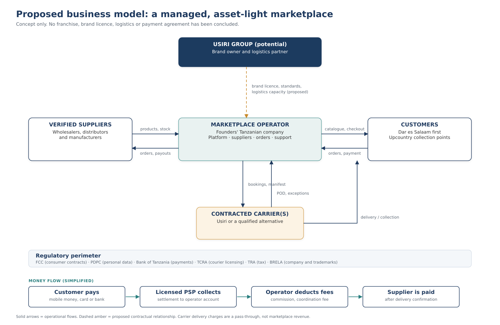
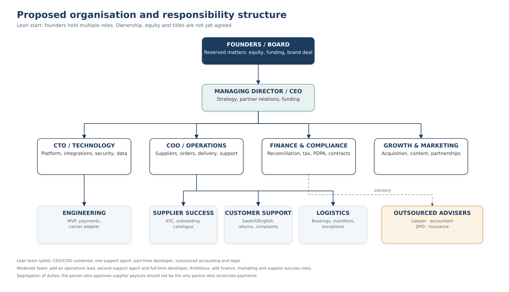
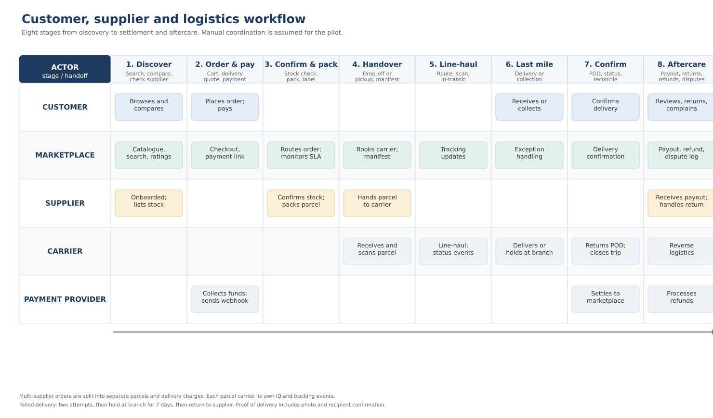
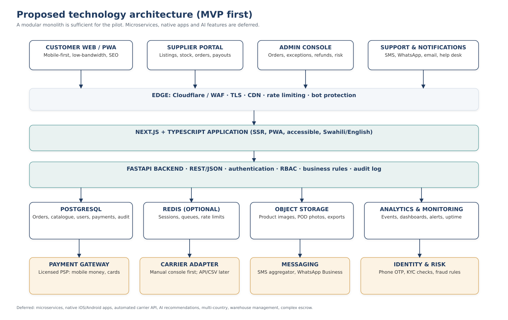

Working name only — no Usiri affiliation is implied.
Project concept document for internal discussion
| Document control | |
|---|---|
| Version | 1.0 — for group discussion |
| Date | 29 October 2026 |
| Prepared for | The founding group |
| Prepared by | Project initiator |
| Status | Concept under investigation. Not an approved project. Not a Usiri project. No partnership, franchise, licence, funding or technical integration exists. |
| Decision sought | Whether to fund a defined research phase (Phase 2), revise the concept, or stop |
Important notice — please read before the rest of the document
This document explores a business idea. It is not a business plan, a legal opinion, a tax opinion, an offer, a prospectus, or a commitment by anyone.
No relationship with Usiri Group of Companies exists. Usiri is named only as one possible logistics and brand partner that the group could approach for discussions. Nothing in this document has been approved, authorised, sponsored or reviewed by Usiri. No franchise fee, royalty, route rate, service level, API, data-sharing arrangement or brand licence has been agreed, quoted or confirmed.
All financial figures are planning assumptions, expressed in Tanzanian shillings (TZS). They are not quotations, market prices or forecasts. Supplier commissions, payment fees, delivery charges, salaries and the hypothetical franchise fee must all be tested with real counterparties.
Market figures are directional. Public estimates of Tanzania’s e-commerce market disagree with each other. They are used here to describe scale and uncertainty, not to promise a revenue opportunity.
No regulatory approval has been obtained. References to Tanzania’s data protection, consumer protection, payment, tax and transport rules are a map of questions for professional advisers, not a compliance certificate.
The names and marks of Usiri and other companies belong to their owners. This document does not grant any right to use them.
Anyone committing money, signing an agreement or approaching a partner should verify the relevant facts independently.
The document is written for a group of university students and early-career entrepreneurs. It assumes curiosity but not specialist knowledge. Technical, legal and financial terms are explained the first time they appear, and there is a glossary at the end.
Each factual statement is tagged so that readers can see how much weight it can bear:
| Tag | Meaning |
|---|---|
| [Verified] | Checked against an official or primary source that is listed in Appendix B. |
| [Self-reported] | A claim made by a company about itself. It may be true, but it has not been independently audited. |
| [Estimate] | A third-party estimate or model. Useful for direction, not precision. |
| [Assumption] | A number or belief the group is using for planning. It must be tested. |
| [To verify] | A question on which the group does not yet have enough evidence. |
Source codes such as [S5] refer to the source register in Appendix B. Where sources conflict, the conflict is shown rather than hidden. The document also states, in Appendix F, what evidence would prove it wrong. A concept document that cannot be falsified is marketing, not analysis.
The document follows the twenty sections requested by the group’s brief. Sections 1–5 explain the idea and the proposed partner relationship. Sections 6–12 explain how it would work. Sections 13–18 test whether it is feasible. Sections 19–20 set out the decision the group must make. The appendices hold the assumptions, sources, research checklist and glossary.
Asset-light. A business that does not own most of the expensive physical assets it uses. A marketplace can own software and contracts while suppliers own stock and carriers own vehicles.
Average order value (AOV). Total value of goods sold divided by the number of orders. If ten orders are worth TZS 750,000 together, the AOV is TZS 75,000.
Break-even. The sales volume at which contribution equals fixed costs, so the business makes neither a profit nor a loss.
Carrier / 3PL. A transport company that moves parcels. “Third-party logistics” (3PL) means using an outside company rather than owning a fleet.
Chargeback. A card payment that a customer disputes through the bank and has reversed. The platform may have to repay the money even after the goods have gone.
Commission (take rate). The percentage of a sale that the marketplace keeps. If a TZS 100,000 sale carries an 8% commission, the platform earns TZS 8,000 before payment and delivery costs.
Contribution. Revenue from an order minus the costs that vary directly with that order (payment fees, support, refund handling, delivery cost). Contribution is the money available to pay fixed costs. It is not profit.
Escrow. A legal arrangement in which a neutral, licensed party holds a buyer’s money until conditions are met. Calling an ordinary platform wallet “escrow” does not make it one.
Franchise. A licence to operate a business under another company’s brand and system, usually for an initial fee plus continuing royalties. Tanzania has no stand-alone franchise statute; franchise relationships are governed mainly by contract and trademark law [S13].
Gross merchandise value (GMV). The total value of goods sold through the platform, including the supplier’s share. GMV is not the platform’s revenue.
KYC (know your customer). Checks on the identity and legitimacy of a supplier or customer before doing business.
MVP (minimum viable product). The smallest version of a product that can be used by real customers to complete a real job, built to test assumptions rather than to impress.
PDPA. Tanzania’s Personal Data Protection Act, 2022. It sets rules for collecting and using personal data and creates the Personal Data Protection Commission (PDPC) [S14].
PSP (payment service provider). A licensed company that processes payments. In Tanzania, payment services are regulated by the Bank of Tanzania.
Reconciliation. The routine matching of what the platform’s order records say, what the payment provider actually settled, and what was paid out to suppliers. Poor reconciliation is how marketplaces lose money quietly.
RACI. A responsibility chart: who is Responsible for doing the work, who is Accountable for the result, who must be Consulted, and who is Informed.
SLA (service level agreement). A written promise about performance, such as delivery within 48 hours or response to a complaint within one working day, with consequences if it is missed.
Take rate. See commission. It can be calculated on gross sales or on net sales after returns; this document is explicit about which one is used.
The group is exploring a curated, multi-vendor online marketplace for Tanzania, operating initially in Dar es Salaam. Independent verified shops would list their products; the platform would bring customers, collect payment, coordinate delivery through a licensed carrier, handle customer service and stand behind the transaction when something goes wrong.
The proposed launch assortment is everyday home, kitchen and small electrical goods in the TZS 30,000–250,000 price band, sold by 25–40 verified Dar es Salaam suppliers. This is narrower than “sell everything”. The narrowness is deliberate: it keeps delivery manageable, reduces counterfeit and warranty risk, and lets a small team become genuinely good at one promise before expanding.
The business would be asset-light. It would not buy stock, own warehouses or run its own fleet at pilot stage. It would earn a commission on sales, a small supplier subscription, a delivery coordination fee and, later, sponsored placement. Suppliers would hold stock and pack orders. A licensed carrier would move parcels. A licensed payment provider would collect money.
Usiri Group of Companies is one possible partner for the delivery and brand layer. It is not a partner today. The group has not approached Usiri for this project, has no term sheet, and has no confirmation that Usiri offers an API, a franchise, a rate card or any willingness to support a marketplace. The pilot plan is designed so that it can proceed with an independent brand and at least two carriers if Usiri declines or negotiations stall.
Three facts shape the opportunity, and one caution shapes the plan.
The first fact is connectivity. Tanzania had about 49.3 million internet subscriptions and 35.29% smartphone penetration by March 2025, with 4G coverage reaching about 91% of the population [S5]. People can reach an online shop far more easily than they could a decade ago.
The second is payment. The Bank of Tanzania reports about 75.78 million active mobile money users and 2.79 million mobile money merchants in 2025, with person-to-business mobile money transactions worth TZS 37.5 trillion [S6]. Paying a stranger remotely is now normal behaviour, not an exotic act.
The third is the gap left by the market. Jumia, the best-known pan-African marketplace, stopped its Tanzanian e-commerce operations in November 2019 [S9]. As of November 2025 it was reported to be considering a return, but no launch had been confirmed [S10]. In the meantime, much online buying happens through Instagram, WhatsApp and Facebook pages, where the seller and buyer negotiate manually and trust depends on screenshots and reputation. Classifieds sites list goods but do not fulfil orders.
The caution is that e-commerce in Tanzania has been difficult for well-funded companies, not only for startups. Low average order values, expensive last-mile delivery, weak addresses, returns, counterfeit goods and thin margins are structural. A new marketplace does not make those problems disappear. It has to be designed around them.
The financial model in Section 15 and the accompanying workbook is deliberately conservative. It assumes an average order value of TZS 75,000, a commission of 8% on net sales after returns, payment fees of 2.5%, a 4% return rate, a support cost of TZS 700 per order and a delivery coordination margin of TZS 500 per order.
On those assumptions, each order contributes about TZS 3,730 towards fixed costs. That single number drives the whole business.
| Scenario | Monthly fixed costs | Orders needed to break even | Orders per day | 12-month funding need (incl. 10% buffer) |
|---|---|---|---|---|
| Lean | TZS 2.2m | 295 | about 10 | TZS 31.17m |
| Moderate | TZS 5.6m | 1,206 | about 40 | TZS 129.75m |
| Ambitious | TZS 12.0m | 2,922 | about 97 | TZS 324.89m |
[Assumption-based model; see Section 15 and the workbook.]
The pilot target is 900 completed orders per month by month six. At 900 orders, the lean structure is profitable at the contribution level but the moderate structure is still losing money: a worked example at 1,000 orders shows revenue of TZS 7.86m, contribution of TZS 4.83m and fixed costs of TZS 5.6m, leaving a net loss of about TZS 770,000 for the month. That is the most important finding in this document. A marketplace at pilot scale is a small, fragile business. It becomes attractive only when order volume rises, fixed costs stay controlled, and ancillary revenue appears.
The lean scenario is the only one a student group could plausibly fund from savings and small contributions. It requires about 295 orders a month to break even, or roughly ten orders a day — achievable in principle, but not guaranteed. The moderate scenario requires outside capital and a much stronger operating team. The ambitious scenario is included to show what “doing this properly” would cost, not as a recommendation.
Usiri Group of Companies describes itself as a Tanzanian transport and services group with more than six years of operation, 50+ routes, 100+ agents, cargo and parcel carriage, bus ticketing and car rental [S1][S2]. Those are self-reported marketing claims. During desk research the group could not find a published fleet size, an API, a rate card, standard terms on liability, or a working public tracking page; the tracking link returned HTTP 404 [S4].
The concept therefore treats Usiri as a candidate counterparty for investigation, not as a foundation. A future relationship could combine a preferred-carrier agreement, a narrow brand licence, co-marketing and collection-point access. Each element would need its own written terms. The group would contribute demand, technology, supplier relationships, customer service and reporting. Usiri might contribute transport capacity, branch reach, local trust and possibly warehousing. Nothing about equity, exclusivity, fees, data or brand use should be assumed.
Section 5 sets out a negotiation checklist and the fallback: launch under an independent brand with a multi-carrier setup, and revisit Usiri when there is volume and evidence.
The group should not approve a launch today. It should approve a bounded research phase: eight weeks, a budget cap of TZS 2–5 million, and a written go/no-go decision at the end. The research must answer the questions that this document cannot answer from a desk: whether customers will pay a delivery fee, which categories they will buy online, what suppliers will accept, what carriers actually charge, and whether a brand licence is affordable and non-exclusive.
The research phase should run in parallel with an independent-brand track, so that the project does not die if Usiri says no. No franchise fee, deposit or brand-specific investment should be paid before due diligence and legal review.
The decision requested from the group is set out in Section 19: approve the research phase, appoint owners, set the budget cap, and agree the evidence thresholds that would justify building an MVP.
A customer in Dar es Salaam who wants to buy a rice cooker, a set of storage containers or a small fan faces a set of ordinary but irritating problems.
Discovery is unreliable. The customer can walk through Kariakoo or a neighbourhood shopping street, but comparing prices and stock across shops takes hours. Online, the same goods appear on Instagram pages, Facebook groups, classifieds sites and scattered WhatsApp catalogues. There is no single place where the offer is complete, current and comparable.
Trust is personal. In social commerce the buyer often pays a deposit or the full amount to a phone number before receiving anything. If the seller disappears, the buyer’s remedy is a phone call, a report to the platform (if any) and luck. Reputation travels through word of mouth, which does not help a first-time buyer.
Delivery is negotiated, not designed. A seller may deliver personally, use a bus parcel service, or ask the customer to collect. Delivery times are vague, packaging is improvised, and responsibility for damage is unclear. The customer bears the uncertainty.
Returns are awkward. If the item is wrong, damaged or not what was pictured, the customer must argue with the seller. Many sellers do not accept returns. The customer’s fallback is to stop buying online.
Payment is not the bottleneck any more. Mobile money is widespread [S6]. The bottleneck is confidence that the goods will arrive as described, on time, with someone accountable if they do not.
A small, legitimate shop has the opposite set of problems.
It has good products and local knowledge, but limited digital reach. It can post on Instagram, but cannot easily manage a catalogue, calculate delivery, reconcile payments or handle returns at scale. It does not want to hand over its customer relationships or its margins. It has heard stories of online sellers being defrauded by fake payment screenshots and of marketplaces paying suppliers late.
A credible marketplace must therefore solve the supplier’s problems too: predictable payouts, clear rules, manageable order flow, and a credible promise that the platform will not compete with the supplier by selling the same goods at a lower price.
Tanzania’s digital and payment infrastructure has improved faster than its organised e-commerce sector. The table below separates what is measured from what is estimated.
| Indicator | Figure | Source and caution |
|---|---|---|
| Population | 61.74 million | 2022 Population and Housing Census [S20]. |
| Dar es Salaam region population | about 5.38 million | 2022 census [S20]. The initial market is a subset of this. |
| Internet subscriptions | 49.3 million | TCRA, quarter ending March 2025 [S5]. Subscriptions are not unique users. |
| Smartphone penetration | 35.29% | TCRA, March 2025 [S5]. Feature phones remain important. |
| 4G population coverage | about 91% | TCRA, March 2025 [S5]. Coverage is not usage. |
| Active mobile money users | 75.78 million | Bank of Tanzania, 2025 [S6]. Includes multiple accounts per person; not unique adults. |
| Mobile money merchants | 2.79 million | Bank of Tanzania, 2025 [S6]. |
| Person-to-business mobile money value | TZS 37.5 trillion | Bank of Tanzania, 2025 [S6]. Flows, not retail sales. |
| E-commerce market size, 2025 | USD 693.11 million | Trade.gov, citing a third-party estimate, +7% [S7]. |
| Alternative e-commerce estimate, 2025 | USD 536 million | eCommerceDB, 15–20% growth [S8]. Conflicts with the figure above. |
The two market-size estimates differ by about 29%. They use different definitions, include different categories and are built with different methods. Neither is an audited measurement of Tanzanian retail e-commerce. The honest conclusion is that the addressable online market is in the range of USD 0.5–0.7 billion, growing, and small relative to total retail. The document uses the range, not a single number.
It is also important not to convert national statistics into a market forecast. Fifty million internet subscriptions do not mean fifty million online shoppers. A large share of mobile money activity is person-to-person transfers, airtime and bill payments, not shopping [S6]. The gap between “connected” and “willing to buy goods online” is exactly what the research phase must measure.
The market is not empty. Jiji and Kupatana list goods; Kikuu sells cross-border products; Dar Shopping and various Facebook and Instagram sellers serve local demand; brand stores and supermarkets sell online in a limited way. The opportunity is not “no one is online”. It is that no locally dominant operator has combined curated supply, reliable delivery and buyer protection at scale since Jumia’s exit.
That combination is hard, which is why it is valuable if it can be executed. A marketplace that merely lists products competes with free classifieds. A marketplace that guarantees the transaction — verified seller, tracked delivery, clear returns, someone to call — offers something different.
The opportunity statement is therefore narrow and testable:
For urban households in Dar es Salaam who are willing to buy home and kitchen goods online, the project can build a trusted marketplace that verifies sellers, coordinates delivery and resolves problems, and can earn a commission plus a delivery coordination fee for doing so.
If customers do not value that guarantee enough to pay for it, the idea fails. That is the central hypothesis, not a detail.
A serious concept must explain why Jumia, with far more capital and experience, left Tanzania in 2019 [S9]. Public reporting and the structure of the market suggest several pressures, although the company’s full internal reasons are not public:
These pressures have not disappeared. The project’s answer is not to ignore them but to start smaller: one city, one assortment, a limited number of verified suppliers, a manual logistics pilot, and a cost structure that a small group can actually fund.
The opportunity becomes investable only if four conditions hold. Each is a research question, not a conclusion:
If any of these fails, the model must change. Section 14 sets out the tests and Section 19 sets out the decision rules.
To make buying from trusted Tanzanian sellers as reliable as walking into a shop.
The vision is about reliability, not technology. The platform succeeds when a customer can order from a shop they have never visited, pay remotely, and receive the right item on time — and when something goes wrong, they know who will fix it.
To operate a curated marketplace that verifies sellers, coordinates delivery and stands behind every order.
Three words carry the strategy: curated (not everything, not every seller), coordinated (the platform owns the handoffs, even when a carrier moves the parcel), and stands behind (the platform does not disappear when there is a dispute).
| Value | What it means in practice |
|---|---|
| Trust before growth | Do not list a seller who cannot be verified, even if the seller would bring sales. |
| Frugality | Spend on things that directly improve delivery, trust or repeat purchase. Do not spend on logo polish or a large office. |
| Transparency | Publish commission, delivery, return and payout rules in plain language. |
| Local partnership | Work with Tanzanian shops and carriers rather than displacing them. |
| Data care | Collect the minimum customer data needed, protect it, and never sell it. |
| Honest measurement | Report returns, failures and losses, not only GMV. |
The following objectives are hypotheses with numbers attached, not commitments. They are set for the first twelve months from the start of the pilot, not from today. Baselines are unknown, so targets are expressed as absolute levels and will be revised after the research phase.
| # | Objective | Target | Why it matters | Owner |
|---|---|---|---|---|
| O1 | Complete customer and supplier research | 30 customer interviews, 15 supplier interviews, 150+ survey responses, 8 mystery shops | Replaces opinion with evidence before spending on build | CEO |
| O2 | Sign pilot suppliers | 40 verified suppliers by month 3; 60 by month 6 | Supply depth is the first constraint on assortment | COO |
| O3 | Build a usable catalogue | 600 active products by month 3; 1,200 by month 6 | Customers need choice; too much choice creates operational chaos | COO |
| O4 | Reach pilot demand | 900 completed orders in month 6 | Tests whether the unit economics can work at small scale | CEO |
| O5 | Protect delivery reliability | At least 90% on-time delivery; damage and loss below 2% | Delivery failure destroys trust faster than low prices build it | Ops lead |
| O6 | Keep returns manageable | Return rate below 5% (electronics may be higher) | Returns consume margin and support time | COO |
| O7 | Acquire customers affordably | Cost per first-time buyer at most TZS 8,000 | Paid acquisition must not exceed contribution | Growth lead |
| O8 | Earn repeat business | At least 20% of buyers order again within 90 days | A marketplace without repeat purchase is a continuous ad campaign | CEO |
| O9 | Reach contribution margin | At least 4% of gross order value by month 6 | The business must fund its own variable costs | Finance lead |
| O10 | Resolve complaints | 90% of complaints resolved within 48 hours | Trust is built in the exception, not the ordinary order | Support lead |
| O11 | Achieve legal baseline | PDPC registration, FCC standard-form filing, written supplier and carrier contracts | Operating without these creates existential risk | Finance & compliance |
| O12 | Produce an honest pilot report | Unit economics, cohort retention, exception log and a go/no-go recommendation | The group must be able to stop as well as start | CEO |
Two disciplines apply to all twelve. First, no target is a promise to investors; the group has no investors at the time of writing. Second, a missed target is data, not a failure of character. The monthly review should ask what the miss reveals about the model, not who to blame.
Months 1–2 are research and partner conversations. Months 3–4 are legal setup, supplier onboarding and MVP build. Months 5–6 are a controlled pilot in Dar es Salaam with a small assortment. Months 7–12 are iteration: fix the biggest operational failure, deepen the best-selling categories, and decide whether the unit economics justify expansion to a second city or a second customer segment. The detailed roadmap is in Section 16.
The project is a managed multi-vendor marketplace. “Multi-vendor” means many independent sellers list on one platform. “Managed” means the platform does not simply host listings; it verifies sellers, collects payment, coordinates delivery, handles returns and answers the customer. The distinction matters because a classifieds site earns from visibility, while a managed marketplace earns from completing transactions and therefore has to control the experience.
The business sits between five groups: customers, suppliers, carriers, payment providers and regulators. The platform’s job is to make the handoffs between them reliable and to charge for that reliability.
| Building block | What the platform does | What it does not do at pilot stage |
|---|---|---|
| Demand | Marketing, curation, search, merchandising, promotions | Buy traffic at any cost |
| Supply | Recruit, verify, onboard and monitor suppliers | Hold supplier stock |
| Fulfilment | Route orders, book carriers, track parcels, manage exceptions | Own a fleet or warehouse |
| Payment | Collect through a licensed provider, reconcile, pay suppliers | Hold customer funds as an unlicensed deposit-taker |
| Trust | Buyer protection, returns, reviews, dispute resolution | Guarantee product quality it cannot inspect |
| Data | Report sales, conversion, delivery performance and supplier scorecards | Sell personal data |
An asset-light model keeps the initial capital requirement within reach of a small founding group. It also converts fixed costs into variable costs: the platform pays a carrier per parcel rather than buying a van, and pays a supplier when a sale occurs rather than buying stock that may not sell.
The trade-off is control. When a carrier is late or a supplier packs badly, the customer blames the platform. The platform therefore has to invest in contracts, standards, monitoring and exception handling — the “soft assets” that make an asset-light model work. Saving money on those is a false economy.
Asset-light does not mean risk-free. The platform may still be liable to the customer for a failure by a supplier or carrier, depending on the terms it publishes and the law. Section 12 discusses this.
The group considered several ways to structure the business. They are not equally suitable.
| Model | How it works | Capital need | Control over experience | Speed to launch | Main risk | Fit for this group |
|---|---|---|---|---|---|---|
| Inventory retailer (classic shop or online store) | Buy stock, hold it, sell it, deliver it | High | High | Medium | Unsold stock, working capital, warehousing | Poor at pilot stage |
| Amazon-style 3P marketplace | Third parties sell; platform provides demand and fulfilment services | Medium–high | Medium | Slow | Complexity, logistics cost, seller quality | Too heavy initially |
| Alibaba-style B2B | Connect businesses to businesses, often cross-border | Medium | Low–medium | Medium | Different customer, longer sales cycle | Not the proposed customer |
| Dropshipping | Supplier ships directly to customer; platform markets | Low | Low | Fast | Quality, delivery time, no control, weak trust | Only as a fallback for long-tail goods |
| Brand licensing / franchise | Operate under an established brand and system for fees | Low–medium | Medium (system rules) | Medium | Fees, restrictions, dependence, brand risk | Possible layer, not the whole model |
| Joint venture with a carrier | Shared equity company with a logistics partner | Medium | Medium–high | Medium | Governance, unequal bargaining power, slow decisions | Premature before evidence |
| Managed marketplace, asset-light | Curate sellers, coordinate carriers, own trust and software | Low–medium | Medium–high | Medium | Thin margins, operational complexity | Best fit, with staged investment |
Recommendation. Start as a managed marketplace with asset-light operations. Do not buy stock. Do not buy vehicles. Do not sign a franchise or joint venture before the research phase. Use a brand licence only if it is non-exclusive, affordable and terminable, and only after legal review. Treat dropshipping as a limited supplement for bulky or slow-moving items, not as the core, because it undermines the delivery promise.
This recommendation is conditional. If research shows that customers will not pay a delivery fee and suppliers will not accept an 8% commission, the managed marketplace may not be viable at all, and the group should consider a narrower service (for example, delivery-only for existing shops) rather than forcing the original idea.
There are four revenue lines, in order of importance at pilot stage:
A fifth line, payment fee markup, is deliberately excluded. The platform should pass through the licensed provider’s cost rather than add a hidden margin that makes the service look expensive.
Section 9 works through the numbers, including what is revenue and what is merely money passing through the business.
| Question | Proposed answer | Why |
|---|---|---|
| Who owns the stock? | The supplier, until the customer receives it. | Avoids working capital and unsold inventory. |
| Who sets the price? | The supplier, within a published range and with platform approval for promotions. | Preserves supplier autonomy while preventing price confusion. |
| Who collects payment? | A licensed payment provider, with the platform as merchant of record for its fees. | Keeps the platform inside payment rules. |
| Who delivers? | A licensed carrier, booked by the platform; a second carrier is qualified before pilot. | Avoids owning a fleet and reduces dependence. |
| Who handles returns? | The platform owns the customer conversation; the supplier bears the cost when the fault is theirs; the carrier bears loss or damage under its terms. | Makes responsibility explicit rather than argued case by case. |
| Who owns the customer relationship? | The platform owns the customer account and service experience; the supplier sees order data needed to fulfil, not the full customer profile. | Protects trust and data, and reduces disintermediation. |
| Who pays for marketing? | The platform, funded by commission and subscriptions; suppliers may co-fund promotions. | Aligns cost with the party that benefits from demand. |
| What is the exit? | Not defined. Do not plan an exit before proving a business. | Prevents pitch-driven decisions. |

The model rests on six assumptions. Each is a test for the research phase.
If assumptions 1–4 fail together, the business is not viable in its current form. If they hold but growth is slow, the lean scenario can survive longer than the moderate one.
The brief asks whether the project could be a franchise. A franchise usually means a licence to operate a proven business system under a brand, with an initial fee, continuing royalties, territory rights, training and standards. Tanzania has no stand-alone franchise law; the relationship is governed mainly by contract and trademark law, with tax treatment to be confirmed [S13].
A franchise could be one layer of this project — for example, a licence to use the Usiri name and its branch network for parcel drop-off. It cannot substitute for the underlying business model. Paying a franchise fee does not create demand, solve delivery or make customers trust the platform. That is why the financial model treats any franchise fee as a placeholder and why the recommendation is to defer it until the research phase produces evidence.
Usiri Group of Companies is a Tanzanian company whose public website describes cargo, parcel and luggage transport, car rental and bus ticketing. Its About page states “6+ Years of Service”, “50+ Routes”, “100+ Agents”, “10k+ Trips Completed” and “5k+ Happy Customers” [S1]. Its transportation page describes carriage of goods, parcels and luggage, with routes including Dar es Salaam to Dodoma, Arusha, Mwanza and Mbeya, and refers to 100+ agents [S2]. A locations page lists branches, but the group has not verified each address [S3].
These are self-reported marketing claims. They are a reasonable basis for a conversation, not for a contract. The following are unknown or unverified:
The group must not fill these gaps with assumptions. The first meeting with Usiri should be a request for information, not a pitch asking for a favour.
A common mistake is to discuss “partnership” as one undifferentiated deal. It is clearer to separate three layers, each with its own terms and its own walk-away point.
Layer 1 — Commercial carrier agreement. The platform books parcels with Usiri at agreed rates and service levels. This is the simplest and most valuable layer. It requires no brand licence, no equity and no franchise fee. It can be tested with a small pilot volume.
Layer 2 — Brand licence. The platform uses the Usiri name and marks in a defined way, for a defined territory and period, subject to quality control. This may help trust, but it also creates dependence and reputational risk for both sides. It requires a written licence, trademark checks, approval rights and termination provisions.
Layer 3 — Franchise or joint venture. A deeper arrangement involving system standards, fees, territory, training, possibly equity. This is the most complex and the least justified before a pilot. It should be deferred.
The recommended sequence is Layer 1 first, Layer 2 only if the pilot works and the brand owner is willing, and Layer 3 only after a year of data and professional advice.
The table describes a possible division of contribution. It is not agreed and should be treated as a starting point for negotiation.
| Area | Platform would contribute | Usiri might contribute | Open questions |
|---|---|---|---|
| Demand | Marketing, customer acquisition, catalogue, promotions | Brand trust, branch footfall, co-marketing | Who pays for co-marketing? Who owns leads? |
| Supply | Supplier recruitment, verification, onboarding, quality standards | Introductions to existing cargo customers | Exclusivity? Data sharing? |
| Delivery | Order routing, labels, tracking updates, exception desk | Line-haul, last-mile, collection points, parcel handling | Rates, SLA, liability, capacity, peak limits |
| Technology | Marketplace, supplier portal, admin, reporting | Possible tracking data or API | Is there an API? Who pays for integration? |
| Payments | Licensed PSP integration, reconciliation, supplier payouts | Possibly collection at branches | Who holds funds? What are the settlement times? |
| Brand | Independent brand and customer promise | Licence of name and marks, if willing | Scope, quality control, fee, termination |
| Data | Customer and order data, analytics | Parcel status data | PDPA roles, ownership, retention, breach notice |
| Risk | Buyer protection reserve, insurance review | Carrier liability, goods-in-transit cover | Who compensates whom, within what limit? |
Before any pilot order is handed over, the group should obtain a written response to the following. A verbal assurance is not enough.
The checklist below is for the group’s internal preparation. It is not a script to read to Usiri.
| Topic | Position to seek | Walk-away condition |
|---|---|---|
| Scope | Start with one corridor and one city; expand on performance | Demand for a large minimum volume before a pilot |
| Exclusivity | Non-exclusive; platform may use a second carrier | Exclusive commitment without volume guarantees |
| Rates | Fixed rate card for 6 months; clear surcharges | Open-ended pricing or rates revised after onboarding |
| Service level | Written on-time and claims targets with remedies | Refusal to state any service level |
| Liability | Clear compensation for loss and damage; insurance evidence | Liability capped below parcel value with no insurance |
| Brand | Narrow, terminable licence; no fee before pilot | Upfront franchise fee with no pilot evidence |
| Term | 12 months with 60-day termination | Multi-year lock-in with penalties |
| Data | Parcel status data shared; PDPA-compliant roles | No data-sharing agreement |
| Payment | Weekly or bi-weekly settlement; clear reconciliation | Cash collection without controls |
| Performance review | Monthly scorecard; joint review | No review mechanism |
| Dispute resolution | Negotiation, then mediation or arbitration in Tanzania | Foreign jurisdiction with high cost |
| Exit | Return of parcels, handover of tracking data | No exit plan |
The Usiri name, logo and any related marks belong to their owner. The platform cannot use them without a written licence. A licence should specify:
The platform should own its software, its own brand (if independent), its supplier agreements and its customer database, subject to data protection law. Building all goodwill into a mark the platform does not own is a strategic risk. If the relationship ends, the customers may follow the brand, not the platform.
The project must be able to proceed without Usiri. The fallback is not a consolation prize; it is the base case.
A successful Phase 3 would produce, at minimum:
If those do not exist, the group should proceed on the independent track and treat Usiri as a future option.
| Stakeholder | Interest | Influence | What they need from the project | Engagement approach |
|---|---|---|---|---|
| Founders / board | Return, purpose, control | High | Clear strategy, honest numbers, defined roles | Weekly stand-up; monthly board |
| CEO | Execution and viability | High | Authority, information, team | Decision rights in Section 6.3 |
| CTO | Buildable, secure system | High | Requirements, budget, time | Product backlog; security review |
| COO | Suppliers, delivery, service | High | Standards, tools, carrier terms | Weekly ops review |
| Finance & compliance | Cash, tax, legal | High | Records, reconciliation, deadlines | Monthly close; compliance calendar |
| Growth & marketing | Demand, brand | Medium | Budget, analytics, offers | Weekly funnel review |
| Suppliers | Sales, timely payout, fair rules | Medium–high | Clear contract, orders, payment | Onboarding; monthly scorecard |
| Customers | Right product, on time, fair remedy | High | Trust, tracking, support | Support; reviews; surveys |
| Carriers | Volume, predictable handover, payment | Medium–high | Manifest, labels, SLA, settlement | Monthly performance review |
| Payment provider | Compliance, low fraud, volume | Medium | KYC, integration, reconciliation | Quarterly review |
| Usiri (potential) | Strategic value, brand risk, revenue | High if engaged | Clear proposal, data, legal terms | Formal meetings; written record |
| PDPC | Data protection compliance | High (regulatory) | Registration, DPO, breach process | Registration; legal advice |
| FCC | Consumer contract fairness | High (regulatory) | Standard-form filing, complaints | Filing; legal advice |
| TCRA | Courier licensing, addressing | Medium | Compliance if acting as courier | Legal advice; carrier uses licensees |
| TRA | Tax registration and payment | High (regulatory) | TIN, VAT, returns, invoices | Accountant; monthly filing |
| Bank of Tanzania | Payment system rules | High (regulatory) | Licensed PSP, no illegal deposit-taking | PSP agreement; legal review |
| Investors / lenders (future) | Return, governance | Medium (not present) | Evidence, controls, reporting | Do not approach before pilot data |
| Advisers | Professional standards | Medium | Clear brief, timely instructions | Retainer or per-matter |
| Community / neighbours | Noise, employment, reputation | Low–medium | Respectful operations | Local communication |
R = responsible for doing the work. A = accountable for the result (one per row). C = consulted. I = informed. Where a role is not yet filled, the founder group acts collectively and the gap is recorded.
| Activity | Founders/Board | CEO | CTO | COO | Finance & Compliance | Growth | External adviser |
|---|---|---|---|---|---|---|---|
| Concept and strategy | A | R | C | C | C | C | I |
| Research programme | I | A/R | I | R | C | C | C |
| Partner (Usiri) engagement | A | R | C | C | C | I | C |
| Legal structure and registrations | A | C | I | I | R | I | C |
| Brand and licence negotiation | A | R | I | I | C | C | C |
| Fundraising / budget approval | A/R | C | C | C | C | I | I |
| Supplier recruitment and KYC | I | A | I | R | C | C | I |
| Catalogue and pricing rules | I | A | C | R | C | C | I |
| MVP requirements | I | A | R | C | C | C | I |
| MVP build and security | I | A | R | C | C | I | C |
| Payment integration and reconciliation | I | A | R | C | R | I | C |
| Delivery operations and carrier SLAs | I | A | C | R | C | I | I |
| Customer support and returns | I | A | C | R | C | I | I |
| Marketing and acquisition | I | A | C | C | C | R | I |
| Data protection and PDPA | I | A | R | C | R | I | C |
| Consumer contract filing (FCC) | I | A | I | I | R | I | C |
| Financial reporting and tax | A | C | I | I | R | I | C |
| Risk register and review | A | R | C | C | C | C | I |
| Pilot evaluation and go/no-go | A | R | C | R | R | C | C |

A small founding group often avoids formal decision rights because everyone is equal. That works until there is money, a deadline or a disagreement. The group should agree the following in writing before spending the research budget.
| Decision | Proposed decision rule |
|---|---|
| Spend within approved budget | CEO, with finance review above TZS 500,000 |
| Hire or engage a contractor | CEO + one other founder |
| Change product scope | CEO + CTO + COO |
| Sign a supplier agreement | COO, using approved template |
| Sign a carrier agreement | CEO + COO, after legal review |
| Sign a brand licence or franchise | Unanimous founders + legal advice |
| Accept investment or debt | Unanimous founders |
| Change equity or founder roles | Unanimous founders, written agreement |
| Stop or pivot the project | Unanimous founders, recorded in minutes |
| Public statement about Usiri | CEO only, with written approval from Usiri if it names them |
Minutes should record decisions, owners and dates. A decision without an owner and a date is a wish.
The group has not agreed ownership, equity splits, salaries or vesting. This document does not assume them. Before the research phase, the founders should put in writing:
These are uncomfortable conversations to have early and much worse to have later. A simple founders’ agreement and IP assignment are more valuable than a polished pitch deck.
The journey below describes the intended experience, the failure points that matter, and the controls that keep the promise. It is a design target, not a description of an existing system.
| Stage | What the customer does | What the platform must do | Common failure | Control | Metric |
|---|---|---|---|---|---|
| 1. Discover | Sees an ad, post or referral; visits the site | Show a clear promise, categories and prices; load fast on a phone | Confusing homepage; slow load; no prices | Mobile-first pages; clear delivery promise; search | Visitors, bounce rate |
| 2. Browse | Searches or filters; compares products | Return relevant results; show real stock; explain delivery time | Out-of-stock items; misleading photos | Stock sync; photo standards; “ships in” label | Search-to-product rate |
| 3. Decide | Reads description, reviews, return policy | Give honest specifications, seller info, delivery fee and return terms before payment | Hidden fees; vague warranty | Total price up front; verified badge; plain-language policy | Add-to-cart rate |
| 4. Checkout | Enters address and phone; pays | Validate address; offer mobile money and card; confirm order by SMS | Payment fails; address incomplete; double charge | Address helper; payment retry; idempotency; confirmation | Checkout completion |
| 5. Confirmation | Receives order number and expected date | Tell the supplier; book carrier; send tracking reference | Silence after payment | Automated confirmation; status page | Confirmation within 5 minutes |
| 6. Fulfilment | Waits; may contact support | Monitor packing and handover; update status | Supplier delays; parcel lost | Cut-off times; manifest; exception alert | On-time dispatch |
| 7. Delivery | Receives parcel; checks item | Notify before delivery; obtain proof of delivery | Failed delivery; wrong item; damage | Two attempts; phone call; photo POD; ID check | First-attempt success |
| 8. Aftercare | Keeps, returns or complains | Resolve within 48 hours; process refund; ask for review | No answer; slow refund; blame-shifting | Ticket system; refund SLA; supplier chargeback | Resolution time; CSAT |
The most important moment is not the first page view. It is the first exception: the parcel is late, the item is damaged, or the customer changes their mind. A marketplace that handles an exception well earns more trust than one that never has a problem, because the customer learns that someone is accountable. The support desk, the returns policy and the refund process are therefore core product, not back-office overhead.
| Stage | What happens | Platform requirement | Supplier experience | Metric |
|---|---|---|---|---|
| 1. Outreach | Platform finds shops through field visits, referrals and social media | Clear value proposition; no false promises | Understands what is being asked | Leads contacted |
| 2. Application | Supplier submits business details, ID, TIN, shop address, product list | Simple form; Swahili and English | Low paperwork | Application completion |
| 3. Verification | Platform checks registration, address, references, product samples | KYC checklist; site visit; photo record | Feels professional, not policed | Verification time |
| 4. Contract | Supplier accepts commission, service standards, returns and payout terms | Plain-language agreement; no hidden fees | Knows the rules | Signed agreements |
| 5. Onboarding | Catalogue upload, photography guidance, packaging standard, training | Templates, CSV upload, WhatsApp support | Can list within a week | Time to first listing |
| 6. First order | Supplier accepts, packs, labels and hands over | Order alert; packing slip; cut-off time | Clear instructions | Acceptance rate |
| 7. Fulfilment | Handover to carrier; status update | Manifest; handover receipt | Knows parcel is tracked | Dispatch time |
| 8. Payout | Platform reconciles and pays | Statement; payout schedule; dispute line | Paid on time, with explanation | Payout accuracy |
| 9. Review | Scorecard on cancellations, late dispatch, returns, complaints | Transparent scoring; improvement plan | Fair treatment | Supplier retention |
A supplier should not be listed merely because it has products. The minimum profile for the pilot is:
A customer may buy three items from three suppliers in one checkout. This is where naive marketplaces break. The platform must decide, before writing code, how a multi-supplier order behaves.
Example. A customer orders:
Total goods value: TZS 170,000. One delivery address. The platform charges one delivery fee, say TZS 6,000, and a coordination fee of TZS 1,000.
What must happen:
Design rule: the customer experiences one order; the platform operates many sub-orders. The data model and the support process must reflect both truths.
| Exception | Who detects it | Immediate action | Customer communication | Cost bearer | Prevention |
|---|---|---|---|---|---|
| Supplier out of stock | Supplier or platform | Cancel line; offer substitute or refund | Within 2 hours; apology; refund date | Supplier if at fault; platform reserve if not | Stock sync; weekly count |
| Late dispatch | Platform | Chase supplier; rebook carrier | Proactive update before the promised time | Supplier if at fault | Cut-off alerts; scorecard |
| Carrier delay | Carrier or tracking | Open exception; offer new date | Same day | Carrier per SLA | Carrier scorecard; second carrier |
| Damaged parcel | Customer or carrier | Photo evidence; replace or refund | Within 24 hours | Carrier or supplier per cause | Packaging standard; insurance |
| Wrong item | Customer | Collect and replace; investigate picking | Within 24 hours | Supplier | Packing checklist; SKU labels |
| Failed delivery | Carrier | Second attempt; collection point | Same day | Customer if not at home; platform if carrier failed | Phone confirmation; address check |
| Refund delay | Finance | Trace PSP; escalate | At each status change | Platform | Refund SLA; daily queue |
| Fraud suspicion | Risk rules or support | Hold order; verify; refund if needed | Discreet verification | Platform | Velocity limits; device checks |

The customer-facing promise depends on backstage work that the customer never sees:
The workflow diagram in diagrams/workflow.svg shows the
same journey across five actors and eight stages. It is a communication
tool for the group, not a technical specification.
A marketplace with “everything” is hard to trust, hard to deliver and hard to market. The first assortment determines the average order value, the return rate, the delivery cost, the supplier profile and the customer’s reason to come back. It is a strategic choice, not a merchandising detail.
The group evaluated nine categories against seven criteria: customer demand, average order value, margin available for commission, return and warranty risk, counterfeit risk, delivery difficulty, and the depth of verifiable suppliers in Dar es Salaam.
| Category | Demand | AOV | Commission room | Return / warranty risk | Counterfeit risk | Delivery difficulty | Supplier depth | Verdict |
|---|---|---|---|---|---|---|---|---|
| Phones and consumer electronics | High | High | Low–medium | High | High | Medium (theft, damage) | Medium | Attractive but risky as a first category |
| Small kitchen and home appliances | Medium–high | Medium | Medium | Medium | Medium | Medium | Medium–high | Recommended core |
| Homeware, storage and kitchenware | Medium–high | Medium | Medium | Low | Low | Low–medium (bulky) | High | Recommended core |
| Fashion and footwear | High | Low–medium | Medium | High (size, fit) | High | Low | High | Good later; returns too high initially |
| Beauty and personal care | High | Low | High | Low–medium (authenticity) | High | Low | High | Good add-on; authenticity controls needed |
| Baby and maternity | Medium | Medium | Medium | Medium (safety) | Medium | Low | Medium | Good add-on with strict verification |
| Groceries and fresh food | High | Low | Low | High (perishable) | Low | High (cold chain) | High | Not suitable for this model |
| Furniture | Medium | High | Medium | Medium | Low | High (bulky, assembly) | Medium | Not initially |
| Building materials | High | High | Low | Low | Medium | High (weight) | Medium | B2B opportunity later, not consumer pilot |
Customer: urban households in Dar es Salaam, particularly young families and renters in Kinondoni, Ilala and Ubungo, who already buy household goods from Kariakoo or local shops and are comfortable paying by mobile money.
Assortment: everyday home, kitchen and small electrical goods in the TZS 30,000–250,000 band. Examples: pressure cookers, serving sets, storage containers, kettles, blenders, standing fans, irons, water filters, baby feeding sets and basic personal-care appliances.
Supplier profile: 25–40 verified shops with physical premises, 30–50 sellable SKUs each, a TIN, a business bank or mobile money account, and the ability to pack to a standard.
Geography: Dar es Salaam mainland first. Do not launch in Arusha, Dodoma or Mwanza until the Dar pilot meets its delivery and repeat-purchase thresholds.
Price band rationale: below TZS 30,000, the delivery fee is too large a share of the order and contribution per order collapses. Above TZS 250,000, the customer expects warranties, installation and a level of after-sales service the pilot cannot yet provide. The band is a hypothesis to test, not a rule from heaven.
Electronics look attractive because the average order value is high. They are also the fastest way to destroy a young marketplace.
Small kitchen appliances sit in a useful middle ground: enough value to support a delivery fee, lower counterfeit risk than phones, and simpler warranty handling. Even here, the platform should require a 30-day functional guarantee and a supplier warranty, and should exclude high-value items until operations are stable.
Groceries have high frequency but low margins, perishability, cold-chain requirements and basket sizes that rarely cover a delivery fee. A grocery marketplace is a different business with different assets. It is not a sensible first category for an asset-light pilot.
| Month | Suppliers | Active SKUs | Category mix | Notes |
|---|---|---|---|---|
| 3 | 40 | 600 | 55% kitchenware, 25% small appliances, 20% home storage | Enough choice to test demand; not so much that stock accuracy collapses |
| 6 | 60 | 1,200 | 50% kitchenware, 30% small appliances, 20% home, baby and personal care | Add adjacent categories only if returns and delivery hold |
| 12 | 90 | 2,000 | Core plus selected fashion, beauty and baby | Expansion depends on meeting Section 8.6 criteria |
The numbers are planning targets [Assumption]. They assume each supplier lists 15–25 active SKUs, not its entire inventory. A catalogue full of out-of-stock items is worse than a smaller catalogue that is accurate.
Do not expand because growth feels slow. Expand because the core works. The group should require all of the following for two consecutive months before adding a city or a major category:
If the core does not meet these thresholds, adding a city multiplies the problem rather than the profit.
Urban households in Dar es Salaam will pay a TZS 5,000–7,000 delivery-related charge for verified home and kitchen goods in the TZS 30,000–250,000 band, and will return within 90 days if the first order arrives on time and as described.
This is the hypothesis the pilot exists to test. If it is false, the segment, the price band or the delivery promise must change. Section 14 explains how the group will know.
Rule 1: GMV is not revenue. If a customer pays TZS 100,000 for a cooker, the platform does not earn TZS 100,000. Most of that money belongs to the supplier, the carrier and the payment provider. The platform earns a commission and fees.
Rule 2: Pass-through money is not revenue. Delivery charges collected from the customer and paid to the carrier are pass-through. Counting them as revenue inflates the business and hides a bad margin. They are shown as a memo item, not as income.
Rule 3: Revenue is recognised net of returns and cancellations. A sale that is returned is not a sale. Commission is calculated on net merchandise value after returns, not on the gross order value.
These rules sound obvious. They are frequently ignored in pitch decks, which is why so many marketplaces look bigger and more profitable than they are.
| Line | Who pays | When | Basis | Model value | Accounting note |
|---|---|---|---|---|---|
| Commission | Supplier | On completed order, after return window | 8% of net GMV (test 6–12%) | TZS 5,760 per TZS 72,000 net order | Platform revenue; reduce for returns |
| Supplier subscription | Supplier | Monthly, in advance | Fixed monthly fee | TZS 600,000/month total (e.g. 30 × TZS 20,000) | Platform revenue; may be waived in first 90 days |
| Delivery coordination fee | Customer | At checkout | Per order | TZS 1,000/order | Platform revenue for booking, labelling and exception handling |
| Sponsored placement | Supplier | Monthly or campaign | Fixed fee or auction | TZS 500,000/month from month 6 | Platform revenue; must be labelled as advertising |
| Payment fee | Customer or supplier | Per transaction | Pass-through at cost | About 2.5% of net GMV | Not platform revenue; cost recovery |
| Carrier charge | Customer | At checkout | Per parcel, per rate card | About TZS 5,000/order average [Assumption] | Pass-through; not revenue |
| Goods value | Customer | At checkout | Supplier’s price | TZS 72,000 net per order | Supplier revenue; not platform revenue |
| Item | TZS | Explanation |
|---|---|---|
| Average order value (gross) | 75,000 | Assumption; must be tested |
| Returns (4%) | (3,000) | Goods returned; no commission earned |
| Net merchandise value | 72,000 | Basis for commission and payment fees |
| Commission at 8% | 5,760 | Platform revenue |
| Payment fee at 2.5% | (1,800) | Paid to the PSP; treated as a variable cost |
| Refund handling at 1% of returns | (30) | Manual processing, reversals, support |
| Customer support | (700) | Allocated cost per order |
| Delivery coordination fee | 1,000 | Revenue for booking and exception handling |
| Delivery coordination cost | (500) | Direct cost of labels, calls, exception handling |
| Contribution per order | 3,730 | Available to pay fixed costs |
| Contribution as % of gross AOV | 4.97% | Thin; volume and fixed-cost discipline matter |
The delivery charge itself is not in this table because it is pass-through. The customer pays an assumed average of TZS 5,000 to the carrier, and the platform earns a separate TZS 1,000 coordination fee. The customer’s total delivery-related charge is therefore about TZS 6,000 in this illustration. That may be too high for a TZS 30,000 order; the research must test it.
| Line | TZS | Note |
|---|---|---|
| Gross order value | 75,000,000 | 1,000 × TZS 75,000 |
| Returns value | (3,000,000) | 4% of gross |
| Net GMV | 72,000,000 | |
| Commission revenue | 5,760,000 | 8% of net GMV |
| Supplier subscriptions | 600,000 | Assumed total |
| Delivery coordination revenue | 1,000,000 | TZS 1,000 × 1,000 orders |
| Sponsored placement | 500,000 | Assumed |
| Total revenue | 7,860,000 | |
| Payment fees | (1,800,000) | 2.5% of net GMV |
| Refund handling | (30,000) | 1% of returns value |
| Customer support | (700,000) | TZS 700 × 1,000 |
| Delivery coordination cost | (500,000) | TZS 500 × 1,000 |
| Total variable costs | (3,030,000) | |
| Contribution | 4,830,000 | |
| Fixed operating costs (moderate) | (5,600,000) | Section 15 |
| Net operating result | (770,000) | A loss |
| Take rate (revenue / gross GMV) | 10.48% | |
| Contribution margin (contribution / gross GMV) | 6.44% | |
| Net margin | (1.03%) |
Memo items, not revenue:
| Item | TZS | Note |
|---|---|---|
| Customer delivery charges collected | 5,000,000 | Passed to carrier |
| Carrier charges paid | (5,000,000) | Net zero to platform |
| Supplier goods value | 72,000,000 | Belongs to suppliers |
The worked example is the clearest statement of the business’s challenge: at 1,000 orders a month, a moderate cost structure still loses money. The platform needs either more orders, a higher contribution per order, lower fixed costs, or more ancillary revenue. Usually it needs all four, in some combination.
Break-even volume is fixed costs divided by contribution per order, after allowing for ancillary revenue.
| Scenario | Fixed costs / month | Ancillary revenue / month | Contribution needed from orders | Break-even orders / month | Orders / day |
|---|---|---|---|---|---|
| Lean | 2,200,000 | 1,100,000 | 1,100,000 | 295 | 10 |
| Moderate | 5,600,000 | 1,100,000 | 4,500,000 | 1,206 | 40 |
| Ambitious | 12,000,000 | 1,100,000 | 10,900,000 | 2,922 | 97 |
The ancillary figure of TZS 1.1m is a steady-state assumption (TZS 600,000 subscriptions plus TZS 500,000 sponsored). In the pilot cash plan, ancillary revenue ramps from TZS 200,000 in month 1 to TZS 800,000 in month 6 in the lean case, and to TZS 1.1m in the moderate case because it assumes more advertising revenue. Before the full run-rate is reached, break-even is higher: at TZS 800,000 of ancillary revenue, the moderate break-even is about 1,287 orders/month, the lean about 375, and the ambitious about 3,003. The difference matters: do not quote a break-even that assumes revenue the pilot has not yet earned.
The table shows break-even orders per month for different average order values and commission rates, holding other assumptions constant and using TZS 1.1m ancillary revenue.
| AOV (TZS) | Commission | Contribution / order (TZS) | Break-even orders / month | Orders / day |
|---|---|---|---|---|
| 50,000 | 6% | 1,460 | 3,082 | 103 |
| 50,000 | 8% | 2,420 | 1,860 | 62 |
| 50,000 | 10% | 3,380 | 1,331 | 44 |
| 75,000 | 6% | 2,290 | 1,965 | 66 |
| 75,000 | 8% | 3,730 | 1,206 | 40 |
| 75,000 | 10% | 5,170 | 870 | 29 |
| 100,000 | 6% | 3,120 | 1,442 | 48 |
| 100,000 | 8% | 5,040 | 893 | 30 |
| 100,000 | 10% | 6,960 | 647 | 22 |
The table makes the strategic trade-off visible. A lower AOV with a low commission requires an order volume the pilot is unlikely to reach. A higher AOV or a higher commission reduces the required volume but may reduce demand or supplier willingness. The group must choose which lever to test first. The recommended test is commission and category mix, not delivery price, because delivery is already close to cost.
The model does not include:
Excluding these keeps the model honest. If the business only works with grant funding, it is a programme, not a company.
Until these are answered, the numbers in this section are a planning tool, not a forecast.
The platform’s promise should be narrow enough to keep:
“We deliver to your address in Dar es Salaam within the stated window. You can track the order. If it does not arrive as described, we will fix it.”
Everything in logistics serves that promise. The platform does not need same-day delivery at launch. It needs predictable delivery, honest communication and a remedy when something fails.
A common mistake is to assume a carrier has an API because it has a website. Usiri publishes no API, no rate card and no working tracking page [S2][S4]. The pilot must therefore be designed for manual coordination, with integration as an upgrade if a carrier proves capable.
| Function | Manual pilot | Integrated future | What must be true for integration |
|---|---|---|---|
| Rate quote | Rate card or WhatsApp confirmation | API quote | Carrier publishes rates and availability |
| Booking | Email or portal entry | API booking | Carrier exposes booking endpoint |
| Label | Platform-generated PDF | API label | Label standard agreed |
| Tracking | Daily status file or phone call | Webhook or poll | Status events with consistent codes |
| Proof of delivery | Photo sent by carrier | API POD | POD attached to parcel record |
| Claims | Email with evidence | API claim | Claims endpoint and SLA |
| Reconciliation | Spreadsheet match | Automated match | Settlement file with parcel IDs |
| Exception handling | Phone and shared sheet | Alerting | Event stream and ownership |
The manual model is not a failure. It is a way to learn what the integration must do. The platform should record every manual step so that the future API specification is based on reality, not imagination.
| Assumption | Value | Basis | Risk |
|---|---|---|---|
| Average customer delivery charge | TZS 5,000 per order | Planning assumption | Too high for low-value orders; too low for bulky items |
| Average carrier charge | TZS 5,000 per order | Planning assumption | Real rates unknown; could be higher |
| Delivery coordination fee | TZS 1,000 per order | Planning assumption | Customer may resist a separate fee |
| Coordination cost | TZS 500 per order | Labels, calls, exception handling | Underestimated if exceptions are frequent |
| Parcel weight | 1–10 kg | Category assumption | Appliances may exceed this |
| First-attempt success | 80% target | Operational target | Address quality may make this optimistic |
| Damaged/lost rate | Below 2% | Operational target | Carrier performance unknown |
None of these is a quotation. The research phase must obtain real rates for representative parcels on representative routes.
| Criterion | Weight | What to check | Minimum |
|---|---|---|---|
| Coverage | 15% | Routes and branches relevant to Dar es Salaam | City-wide plus 2 upcountry corridors |
| Reliability | 20% | On-time history, references, complaints | Evidence of 90%+ on-time or credible plan |
| Parcel handling | 15% | Fragile goods, size limits, packaging rules | Written handling standard |
| Tracking | 10% | Status events, POD, customer communication | Daily status file or portal |
| Liability and insurance | 15% | Compensation limits, claims process, cover | Written terms and insurance evidence |
| Price | 15% | Rate card, surcharges, minimums | Within model assumption or negotiable |
| Financial stability | 5% | Years trading, ownership, payment terms | No obvious distress |
| Technology readiness | 5% | API, portal, data format | Manual acceptable; API preferred |
Score each carrier out of 5 and multiply by the weight. A carrier that scores well on price but poorly on liability is not a bargain.
The standard operating procedure should be short enough for a new operations assistant to follow on day one.
Before dispatch
At handover
In transit
At delivery
Exception
Delivery is a cost centre with a small coordination margin, not a profit centre. The platform should resist the temptation to mark up delivery aggressively; customers compare delivery charges and will abandon. The better strategy is to reduce cost per successful delivery through:
| KPI | Definition | Target | Source |
|---|---|---|---|
| On-time dispatch | Supplier hands over by cut-off | 95% | Order system |
| On-time delivery | Delivered within promised window | 90% | Carrier manifest + POD |
| First-attempt success | Delivered on first attempt | 80% | Carrier report |
| Damage rate | Damaged parcels / delivered parcels | Below 1.5% | Claims log |
| Loss rate | Lost parcels / dispatched parcels | Below 0.5% | Claims log |
| Average delivery time | Order to delivery, by zone | 2–4 days | Order system |
| Cost per delivered order | Total carrier cost / delivered orders | Within model | Finance |
| Exception resolution | Resolved within 48 hours | 90% | Support system |
| Carrier invoice accuracy | Invoices matching manifest | 98% | Reconciliation |
If Usiri becomes a carrier, the pilot should still qualify a second carrier. The reasons are practical, not political:
The carrier adapter in the technology architecture (Section 11) exists to make switching possible without rebuilding the platform.
The technology exists to run the marketplace reliably, not to demonstrate sophistication. Six principles guide the design:
The diagram diagrams/tech_architecture.svg shows the
flow from clients to data and integrations. In words:

| Layer | Proposed choice | Why | Alternative |
|---|---|---|---|
| Customer front end | Next.js + TypeScript | Server rendering, good performance, large talent pool | Remix, SvelteKit |
| Styling | Tailwind CSS | Fast consistent UI; small CSS | CSS modules |
| Supplier/admin front end | Next.js or a simpler React admin | Reuse components; role-based access | Retool, Appsmith |
| API | FastAPI (Python) | Clear contracts, good validation, fast development | NestJS, Django |
| Database | PostgreSQL | Relational integrity for orders and payments; mature | MySQL |
| Cache/queue | Redis | Sessions, rate limits, background jobs | Managed queue |
| File storage | S3-compatible object storage | Product images, KYC documents, invoices | Cloud provider storage |
| Search | PostgreSQL full-text first; managed search later | Avoid another service at pilot | Meilisearch, Algolia |
| Payments | Licensed PSP/aggregator with mobile money and cards | Compliance and reach | Direct telco integrations (not recommended) |
| Messaging | SMS gateway + WhatsApp Business API | Customers use both | Email only (insufficient) |
| Hosting | Managed platform (Vercel/Render/Fly) + managed Postgres | Low ops burden | VPS with Docker |
| Monitoring | Sentry + uptime monitor + structured logs | Find failures fast | Cloud-native tools |
| Analytics | Privacy-conscious product analytics | Understand funnel without over-collecting | Self-hosted |
The stack is a proposal, not a commitment. The group should choose based on the skills it actually has. A team that knows Django better than FastAPI should use Django; the architecture matters more than the brand of the framework.
| Module | Functions | Priority |
|---|---|---|
| Identity and access | Customer, supplier and staff accounts; MFA for staff; role-based permissions | Must |
| Catalogue | Products, variants, categories, attributes, images, approval workflow | Must |
| Inventory | Stock per supplier, reservation, suppression at zero | Must |
| Search and discovery | Keyword search, filters, sorting, category pages | Must |
| Cart and checkout | Multi-supplier cart, address, delivery estimate, fees, payment | Must |
| Orders | Order and sub-order lifecycle, statuses, cancellation, partial refund | Must |
| Payments | PSP integration, webhook handling, idempotency, refunds | Must |
| Payouts | Supplier statements, holds, settlement, reconciliation | Must |
| Delivery | Shipment records, carrier adapter, labels, tracking, POD | Must |
| Returns | Return requests, approval, reverse logistics, inspection, refund | Must |
| Notifications | SMS, WhatsApp, email templates, event triggers | Must |
| Support | Ticket queue, order context, canned responses, escalation | Must |
| Admin | Supplier management, catalogue moderation, dispute resolution, reporting | Must |
| Reviews | Verified-buyer reviews, moderation, supplier reply | Should |
| Promotions | Vouchers, supplier-funded discounts, campaign tracking | Should |
| Analytics | Funnel, cohort, category, supplier and delivery reports | Should |
| Advertising | Sponsored placement slots and reporting | Later |
| Loyalty | Points or subscription for customers | Later |
| Multi-currency | USD/EUR pricing | Later |
| Native apps | iOS/Android | Later |
The minimum entities are:
The data model must support partial cancellation and partial return from day one. Retrofitting these later is expensive and creates accounting errors.
| Capability | MVP | Advanced | Why defer |
|---|---|---|---|
| Customer web app | Server-rendered responsive site/PWA | Native apps | Web reaches more people at lower cost |
| Payments | Mobile money + cards via PSP | Wallets, instalments, BNPL | Adds risk and integration cost |
| Delivery | Manual booking + status updates | API booking, live tracking | Carrier capability unknown |
| Search | Keyword + filters | Personalised recommendations | No data yet |
| Reviews | Verified text reviews | Photos, sentiment analysis | Moderation cost |
| Support | Shared inbox + order context | Chatbot, workforce management | Volume too low |
| Analytics | Funnel and cohort dashboards | Data warehouse, attribution | Overkill at pilot |
| Infrastructure | Monolith + managed services | Microservices, event bus | Complexity without scale |
| Multi-city | One city | Multi-city, zones | Operations must be proven first |
| Language | Swahili + English | Additional languages | Not needed initially |
There are three realistic routes:
The recommendation is to decide in Phase 5, after research, based on three questions: What is the real workflow? What skills does the team have? What is the total cost over 24 months, including subscriptions and integration? A custom build that takes nine months and costs TZS 40m may be worse than a hosted platform that launches in six weeks for TZS 8m, even if the latter is less elegant.
The model allocates TZS 6m (lean), TZS 18m (moderate) and TZS 40m (ambitious) to MVP development, plus monthly hosting and tools. Those figures assume a mix of founder time and contractors. They do not include a full-time engineering salary, which would exceed the lean budget on its own.
The realistic team for the MVP is:
If the group does not have these skills, it should buy a hosted platform rather than attempt a custom build it cannot maintain. An unmaintained marketplace is a security and financial liability.
| Risk | Likelihood | Impact | Mitigation |
|---|---|---|---|
| Scope creep delays launch | High | High | Fixed MVP list; change control; launch date |
| Payment integration takes longer than planned | Medium | High | Start PSP sandbox in week 1; use hosted checkout |
| Carrier has no API | High | Medium | Manual pilot; adapter design; second carrier |
| Data breach | Low–medium | Very high | Security baseline; pen test before launch; insurance |
| Founder leaves with system knowledge | Medium | High | Documentation; code repository; IP assignment |
| Hosting costs grow unexpectedly | Medium | Medium | Budget alerts; usage caps; managed plans |
| Poor performance on mobile networks | Medium | High | Image optimisation; CDN; performance budget |
| Over-engineering | High | Medium | Monolith; buy commodity; review scope monthly |
The last risk is the most common in student-founded technology projects. A beautiful architecture that never launches is worth less than a plain application that takes real orders.
This section is a map of issues, not legal advice. Tanzania’s rules change, and their application depends on facts the group has not yet established. A qualified Tanzanian lawyer, accountant and, where relevant, the regulator must review the structure before launch. The group should budget for this review in Phase 4.
The simplest compliant design is:
The platform should use the PSP’s split-payment or marketplace settlement feature if available, so that supplier funds are segregated or paid out under the provider’s licence. If no such feature is available, the platform must confirm with counsel whether holding supplier funds creates a payment-service, deposit-taking or trust-account obligation.
Do not call the arrangement “escrow” unless a licensed party is legally acting as escrow agent under a proper agreement. An ordinary platform wallet that holds money for a few days is not escrow. Using the word loosely creates legal and reputational risk.
| Method | Customer appeal | Platform considerations | Status |
|---|---|---|---|
| Mobile money (M-Pesa, Mixx by Yas, Airtel Money, HaloPesa, T-Pesa, Azam Pesa) | High; familiar; low friction | Multiple integrations; fees; settlement times; phone-number verification | Likely core |
| Cards (Visa/Mastercard) | Useful for some customers and expatriates | Chargebacks; 3-D Secure; higher fees; fraud risk | Secondary |
| Bank transfer | Useful for larger orders and suppliers | Manual reconciliation; delayed confirmation | Limited |
| Cash on delivery | Trust for first-time buyers | Cash handling, refusal, theft, reconciliation; may require a courier licence or partner | Optional, restricted |
| TIPS / TANQR | Interbank and QR payments | Requires PSP support; customer familiarity varies | Explore |
| Wallet/credits | Repeat customers | Licensing and safeguarding issues; float risk | Avoid initially |
The exact list depends on what the chosen PSP supports. The platform should not integrate directly with every telco at launch; a licensed aggregator reduces complexity, even if the fee is slightly higher.
Reconciliation is the least glamorous and most important finance process. A marketplace can appear to grow while losing money through unrecorded refunds, duplicate payouts, uncollected fees and carrier overbilling.
Daily controls:
Payout controls:
Monthly close:
The published policy should answer, in plain language:
A common failure is to promise “easy returns” in marketing and then make the process difficult. The policy must match the operating capability. If the platform cannot inspect a returned item within 48 hours, it should not promise a 48-hour refund.
Chargebacks are different from ordinary refunds: the card issuer decides, often on documentary evidence. The platform needs a chargeback playbook, evidence templates and a fraud review before the first card payment is accepted.
| Fraud type | How it appears | Control |
|---|---|---|
| Stolen payment instrument | Card or mobile money used without authorisation | PSP risk checks; 3-D Secure; device and phone verification; velocity limits |
| Fake payment screenshot | Customer claims payment but no settlement | Only fulfil on confirmed PSP settlement, never on a screenshot |
| Refund abuse | Repeated “not received” or “damaged” claims | Evidence requirements; pattern detection; account review |
| COD refusal | Customer refuses a parcel at the door | Phone confirmation; deposit for high-value orders; restrict COD |
| Supplier non-delivery | Supplier takes order but does not ship | Staged payouts; scorecard; delisting; reserve |
| Counterfeit goods | Product is not genuine | KYC; sample checks; brand authorisation; buyer reports; delisting |
| Account takeover | Attacker changes payout or address | MFA; change cooling period; notification; manual review |
| Internal fraud | Staff issue refunds to accomplices | Segregation of duties; audit logs; threshold approvals |
Fraud controls should be proportionate. Treating every customer as a criminal destroys conversion; treating none as a risk destroys the business. Start with simple rules, measure false positives and adjust.
A verified seller is the platform’s most important trust asset. The minimum check is:
High-risk categories (electronics, beauty, baby, health) require additional checks. A seller that fails verification should be rejected with a written reason and a route to appeal.
Tanzania’s Fair Competition Commission administers rules on standard-form consumer contracts. The Standard Form (Consumer Contracts) Regulations 2014 require certain standard-form contracts to be registered with the FCC, with an application and review process [S16]. The platform’s customer terms, supplier terms and returns policy may fall within scope.
Practical steps:
The FCC process is not a one-off formality. A contract that is registered but not followed is still a consumer-protection problem.
The Personal Data Protection Act 2022 establishes the Personal Data Protection Commission and a set of obligations for organisations that collect personal data [S14]. Law-firm commentary reports a registration deadline of 8 April 2026, with enforcement from 9 April 2026 and a requirement for a Data Protection Officer [S15]. That date has passed; the group must confirm the current registration status, procedure and any transitional arrangements directly with the PDPC or counsel.
The platform will collect names, phone numbers, addresses, order histories, payment references, supplier KYC documents and possibly location data. The compliance baseline is:
Penalties reported by law firms can be severe, including substantial fines and imprisonment for serious breaches [S14]. The point is not the maximum penalty; it is that a data breach destroys customer trust faster than a delivery failure.
The Electronic Transactions Act 2015 (Cap. 442 R.E. 2022) recognises electronic transactions, signatures and records [S19]. This supports online contracting, electronic invoices and digital records, subject to the Act’s requirements. The platform should:
The main taxes to confirm with an accountant are:
| Tax | Current reported position | What it means for the platform |
|---|---|---|
| VAT | Standard rate 18%; registration threshold TZS 200m turnover (or TZS 100m in six months) [S11] | Monitor threshold; VAT on commission and fees; input VAT on eligible costs; invoices |
| Corporate income tax | 30% for resident companies [S12] | Tax on profit, not GMV; losses may carry forward subject to rules |
| Withholding tax | Applies to certain payments; 15% reported on non-resident royalties [S13] | Brand licence or franchise fees may attract withholding; confirm |
| Payroll taxes | PAYE, social security and other contributions | Register as an employer; payroll compliance |
| Customs and import duty | Applies to imported goods | Supplier responsibility, but the platform should not facilitate under-declaration |
| Digital services / e-commerce rules | May change | Confirm current treatment with counsel and TRA |
The platform should issue proper invoices for commission and fees, keep VAT records, and not treat pass-through delivery charges as its own revenue without advice. Tax treatment of marketplace facilitator models can be complex; assume nothing.
Tanzania has no stand-alone franchise statute. Franchise and brand-licence relationships are governed mainly by the Law of Contract Act (Cap. 345) and the Trade and Service Marks Act (Cap. 326), with competition and consumer rules also relevant [S13].
Key points:
When a parcel is lost or damaged, the customer will look to the platform, even if the carrier caused the loss. The platform’s terms should explain the remedy, and its carrier contract should allocate the cost.
Questions to resolve:
The group should obtain written confirmation from TCRA or counsel on the licensing question before handling parcels itself. Using licensed carriers reduces the risk but does not eliminate the platform’s obligations to customers.
Tanzania has a national postcode and addressing programme [S18], but many deliveries still rely on landmarks, phone calls and local knowledge. The platform should:
| Month | Item | Owner |
|---|---|---|
| 1 | Company registration, TIN, business licence, bank account | Finance |
| 1 | Trademark search and application | Finance/legal |
| 1–2 | Supplier agreement, customer terms, privacy notice | Legal adviser |
| 2 | PDPC registration and DPO appointment (confirm current rules) | Finance/compliance |
| 2 | FCC standard-form contract filing (confirm scope) | Legal adviser |
| 2 | PSP merchant application and KYC | Finance |
| 3 | Insurance review (goods in transit, public liability, cyber) | Finance |
| 3 | Employment contracts and payroll registration | Finance |
| 3 | VAT registration assessment | Accountant |
| 4 | Carrier agreements and SLA | CEO/COO |
| 4 | Security review and pen test | CTO |
| 6 | First compliance audit | Finance/compliance |
| 9 | Contract and policy review | Legal adviser |
| 12 | Annual tax and data-protection review | Finance/compliance |
Corporate and commercial
Payments
Data protection
Consumer and competition
Tax and transport
These questions should be answered in writing and stored with the project’s legal file. The answers will change the model; that is the point of asking before launch.
This section is based on desk research conducted in October 2026: company websites, official statistics, government guidance and news reports. It is not a substitute for primary research. The group has not yet interviewed customers, suppliers or carriers, and has not run a pricing test. Market shares are not published in a reliable form, and this document does not invent them.
The desk research had three purposes: understand the customer’s alternatives, identify what has and has not worked in Tanzania, and frame the questions that primary research must answer.
The platform would compete with several different kinds of alternative, not one competitor.
| Alternative | Model | Strengths | Weaknesses / gaps | What it means for the project |
|---|---|---|---|---|
| Jiji | Classifieds; sellers and buyers connect; no fulfilment [S21] | Large selection; familiar brand; free listing; strong SEO | No payment protection, delivery or consistent seller verification; buyer must negotiate | The platform must offer a materially safer, more convenient transaction, not just listings |
| Kupatana | Classifieds; broad categories [S22] | Established classifieds brand; broad inventory | Same structural gaps as classifieds; quality varies | Do not compete on number of listings; compete on completed orders |
| KiKuu | Cross-border e-commerce; ships into multiple countries [S23] | Low prices; wide assortment; established logistics for cross-border | Long delivery times; returns difficult; customs; limited local after-sales | Local stock and fast, accountable delivery are the differentiator |
| Dar Shopping | Local e-marketplace; delivery and pickup; cash on delivery and online payment [S24] | Local presence; delivery options; broad categories | Scale and seller quality unknown; trust and consistency are hard | A direct comparator; differentiate on curation, verification and service |
| Jumia | Pan-African marketplace; exited Tanzania in 2019 [S9]; reportedly considering a return in 2025 [S10] | Capital, systems, brand recognition if it returns | Past exit shows the difficulty; no confirmed launch | A returning Jumia would validate the market and intensify competition; do not plan on its absence |
| Social commerce (Instagram, Facebook, WhatsApp, TikTok) | Sellers market and negotiate directly; payment by mobile money; delivery informal | Low cost; personal; huge reach; impulse buying | No buyer protection; inconsistent delivery; no catalogue; trust depends on reputation | Partner with good social sellers rather than only competing with them |
| Kariakoo and local shops | Physical retail; negotiate in person; cash or mobile money | Immediate possession; see the product; relationships | Time cost; traffic; no delivery; limited comparison | The benchmark for price and trust; online must beat the total experience, not just the price |
| Brand stores and supermarkets | Brand.com or retail chain e-commerce | Authenticity; warranty; trusted returns | Narrow assortment; limited delivery coverage; higher prices | Potential suppliers or partners; not direct competitors in the chosen category |
| Informal resellers | Individual buyers who resell via social media | Flexible; cheap; personal service | No accountability; counterfeit risk; no scale | Some are potential suppliers; others are competition on price |
First, the market is not won by listings. Jiji and Kupatana already aggregate enormous choice. A new site with fewer listings cannot win by being a smaller classifieds site. It must win by completing orders and standing behind them.
Second, cross-border price competition is real. KiKuu and similar platforms can undercut local prices on many goods. The local platform should not try to be the cheapest on every item. It should compete on delivery time, returns, local warranty and the ability to speak to someone.
Third, a returning Jumia is a serious possibility. If Jumia re-enters, it will bring capital, systems and brand awareness. The project’s defence is not to outspend it but to be more trusted and more locally embedded in a narrow segment. A small marketplace can coexist with a large one if it serves a specific customer better.
Fourth, social commerce is both competitor and supply channel. Many good sellers already have Instagram and WhatsApp audiences. The platform can offer them fulfilment, payments and a storefront, rather than asking them to abandon their audience. This is a realistic supplier acquisition strategy.
The proposed differentiation is a combination, not a single feature:
Each feature is copyable. The combination, executed consistently, is the moat. Trust is built slowly and lost quickly; that is why operations matter more than the website.
For Dar es Salaam households who want home and kitchen goods without the risk of paying a stranger online, Usiri Marketplace (working name) is a curated marketplace that verifies every seller, coordinates delivery and resolves problems within 48 hours. Unlike classifieds and social sellers, it stands behind the order; unlike cross-border platforms, it delivers from local stock with local after-sales support.
The name is a working label only. It cannot be used publicly without a licence from Usiri. If no licence is agreed, the project must adopt an independent name.
The desk research cannot answer the questions that determine viability. The Phase 2 research must cover:
| Question | Method | Sample | Evidence standard |
|---|---|---|---|
| What do customers buy online today, and why? | Interviews | 30 | Recorded themes, not anecdotes |
| What delivery fee will they pay? | Survey with price options | 150+ | Stated preference; validate with a real test |
| What stops them buying from a new marketplace? | Interviews and survey | 30 + 150 | Ranked barriers |
| Which categories have the highest repeat potential? | Interviews and purchase diary | 30 | Actual or recent purchases |
| What commission will suppliers accept? | Supplier interviews | 15 | Specific percentage and rationale |
| What are the real carrier rates? | Quote requests | 3 carriers | Written rate card |
| What do returns cost? | Supplier and carrier interviews | 10 | Cost per return |
| Who are the credible suppliers? | Field visits | 40 | Verification checklist |
| What are competitors’ delivery and return promises? | Mystery shopping | 8 | Screenshots and timestamps |
| Is a brand licence available and at what cost? | Partner meeting | 1–2 | Written indication |
After launch, the group should track competitors monthly on a simple scorecard:
The purpose is not to copy. It is to notice when a competitor changes the rules, and to avoid being surprised.
The project is technically feasible, operationally demanding, legally manageable and financially fragile at pilot scale. It is not a bad idea; it is a hard business with a narrow margin for error. The group should proceed only if it is willing to run a disciplined, evidence-led research phase and to stop if the evidence does not support the model.
| Dimension | Rating | Rationale |
|---|---|---|
| Market | Conditional | Large population and growing digital payments, but unproven willingness to pay for a new marketplace; strong alternatives |
| Operational | Challenging | Multi-supplier fulfilment, address quality, carrier reliability and returns are hard; a small team can manage only a narrow scope |
| Technical | Feasible | Standard web stack, licensed payments and manual logistics are enough for a pilot; no exotic technology required |
| Financial | Weak at pilot | Contribution per order is thin; fixed costs consume it below about 1,200 orders/month in the moderate case |
| Legal / regulatory | Manageable but non-trivial | Registration, PDPA, FCC, tax, payments and transport liability all require professional advice and ongoing compliance |
| Strengths | Weaknesses |
|---|---|
| Asset-light model; low capital relative to inventory retail | Thin unit economics; dependent on volume |
| Clear trust proposition in a low-trust market | No proprietary supply, brand or logistics asset |
| Local knowledge and language | Small team with limited operating experience |
| Narrow initial category reduces complexity | No proven demand; no customer base |
| Technology can be built or bought incrementally | Dependence on carriers and payment providers |
| Ability to learn quickly and pivot | Founder time and funding constraints |
| Opportunities | Threats |
|---|---|
| Social commerce sellers need fulfilment and trust | Jumia or another funded marketplace re-enters |
| Mobile money penetration and merchant growth | Carrier failure or price increase |
| Jumia’s absence leaves a gap | Regulatory change or enforcement |
| Suppliers want digital reach without losing control | Fraud, counterfeits and reputational damage |
| Brand partnership with a trusted local name | Usiri declines or demands uneconomic terms |
| Expansion to B2B or adjacent cities after proof | Economic pressure reduces discretionary spending |
Scores use likelihood 1–5 and impact 1–5; the score is the product. The full register, with editable scores, is in the workbook. The table below summarises the highest-priority risks. These are assessments, not measured probabilities.
| ID | Risk | Category | L | I | Score | Mitigation | Owner |
|---|---|---|---|---|---|---|---|
| R01 | Usiri declines or negotiations stall | Strategic/partner | 4 | 5 | 20 | Independent-brand track; two alternative carriers; decision deadline before brand spend | Founder lead |
| R02 | Supplier fraud, counterfeit or misrepresentation | Commercial/trust | 3 | 5 | 15 | KYC, shop visits, samples, category limits, warranties, reserve, delisting | COO |
| R03 | Delivery failures, late or damaged parcels | Operational | 4 | 4 | 16 | Written SLA, two attempts, collection points, photos, insurance, exception desk | Ops lead |
| R04 | Low demand or high acquisition cost | Commercial | 4 | 4 | 16 | Narrow segment, waiting list, supplier-led demand, referrals, stop-loss budget | CEO |
| R05 | Thin margins make the model unviable | Financial | 4 | 4 | 16 | Test 8–12% commission, subscriptions, delivery fee; keep fixed costs lean | Finance lead |
| R06 | Payment fraud, chargebacks or reconciliation gaps | Financial/technology | 3 | 4 | 12 | Licensed PSP, device checks, velocity limits, daily reconciliation, payout holds | CTO |
| R07 | Data breach or PDPA non-compliance | Legal/technology | 3 | 5 | 15 | PDPC registration, data map, least privilege, encryption, breach playbook, insurance | CTO/DPO |
| R08 | Consumer-contract or returns policy challenged | Legal/reputation | 3 | 3 | 9 | Plain-language terms, FCC filing, clear returns, complaints log, legal review | Legal adviser |
| R09 | Jumia or another funded marketplace enters | Competitive | 3 | 5 | 15 | Differentiate on verification, delivery and support; avoid subsidy war; supplier switching costs | CEO |
| R10 | Over-dependence on one logistics partner | Operational/strategic | 4 | 3 | 12 | Qualify a second carrier; adapter layer; standard SLAs and parcel IDs | Ops lead |
| R11 | Key-person dependency and unclear founder roles | Organisational | 4 | 3 | 12 | Written roles, equity and vesting, documented processes, cross-training, IP assignment | Founders |
| R12 | Technology outage or security incident | Technology | 3 | 4 | 12 | Managed hosting, backups tested, monitoring, status page, incident runbook, WAF | CTO |
| R13 | Regulatory change or new tax rules | Regulatory | 3 | 3 | 9 | Quarterly review, accountant on retainer, flexible contracts, compliance calendar | Legal adviser |
| R14 | Currency or inflation pressure | Financial | 3 | 3 | 9 | TZS pricing, periodic repricing, cost buffers, avoid USD-linked commitments | Finance lead |
| R15 | Brand or reputational damage from an incident | Reputation | 2 | 5 | 10 | Brand-use guidelines, rapid response, compensation policy, transparency, escalation | CEO |
Reading the register: R01 and R03/R04/R05 are the risks that should shape the plan. R01 is addressed by the fallback track. R03–R05 are addressed by starting narrow, keeping fixed costs low and setting stop-loss triggers. The register should be reviewed monthly; a risk that is not reviewed is a decoration.
The model has three cost structures. The table shows the monthly operating result at different order volumes, with ancillary revenue ramping as in the cash plan. It illustrates operating leverage: small changes in volume produce large changes in profit or loss.
| Monthly orders | Lean (fixed TZS 2.2m) | Moderate (fixed TZS 5.6m) | Ambitious (fixed TZS 12m) |
|---|---|---|---|
| 300 | (681,000) | (4,081,000) | (10,481,000) |
| 900 | 1,957,000 | (1,443,000) | (7,843,000) |
| 1,200 | 3,376,000 | (24,000) | (6,424,000) |
| 1,500 | 4,495,000 | 1,095,000 | (5,305,000) |
| 3,000 | 10,090,000 | 6,690,000 | 290,000 |
Assumptions: contribution TZS 3,730/order; ancillary TZS 400,000 at 300 orders, TZS 800,000 at 900, and TZS 1.1m at 1,200 or more, for all scenarios. Figures are rounded to the nearest thousand and are planning illustrations, not forecasts.
The table shows why the lean structure is the right starting point. It can survive at 900 orders; the moderate structure cannot. The ambitious structure needs thousands of orders before it is viable, which is why it should not be attempted without serious capital and a proven playbook.
The group should agree in advance what would cause it to stop. Proposed criteria:
Stopping is a legitimate outcome. It preserves capital and reputation for the next idea.
All figures are in Tanzanian shillings and are planning assumptions, not quotations. They are rounded and inclusive of VAT where VAT would apply, unless stated. The model uses an exchange rate of TZS 2,645 per USD for any conversion; the rate moves, so USD-denominated costs should be rechecked.
Three scenarios are presented:
| Item | Lean (TZS) | Moderate (TZS) | Ambitious (TZS) | Notes |
|---|---|---|---|---|
| Company formation, TIN, licence, basic legal | 1,500,000 | 2,500,000 | 4,000,000 | BRELA, tax, basic contracts |
| Partner/franchise negotiation and due diligence | 1,500,000 | 5,000,000 | 10,000,000 | Legal and travel; not a fee |
| Illustrative brand licence/franchise fee (placeholder) | 0 | 15,000,000 | 50,000,000 | Not a quote; may be zero or unaffordable |
| Brand identity and UI/UX | 800,000 | 2,500,000 | 6,000,000 | Logo, design system, content |
| MVP development | 6,000,000 | 18,000,000 | 40,000,000 | Founder time plus contractors |
| Payment gateway integration and testing | 400,000 | 1,200,000 | 3,000,000 | Integration, certification, test transactions |
| Devices, office and equipment | 800,000 | 2,500,000 | 7,000,000 | Laptops, phones, furniture |
| Supplier onboarding and catalogue | 800,000 | 2,500,000 | 6,000,000 | Field visits, photography, training |
| Launch marketing | 2,000,000 | 6,000,000 | 15,000,000 | Digital, field, referral |
| Legal documents: T&Cs, privacy, consumer filing | 800,000 | 2,500,000 | 5,000,000 | Drafting and review |
| Subtotal | 14,600,000 | 57,700,000 | 146,000,000 | |
| Contingency (15%) | 2,190,000 | 8,655,000 | 21,900,000 | Scope and cost overruns |
| Total one-time | 16,790,000 | 66,355,000 | 167,900,000 |
The placeholder franchise fee is the largest single variable. If a brand licence costs TZS 15m or TZS 50m upfront, it changes the funding requirement dramatically. The group should not accept a fee before it has evidence that the brand is worth more than an independent name. It may also be possible to structure a licence as a royalty on sales rather than an upfront fee, which shifts risk; that must be negotiated and taxed correctly.
| Item | Lean (TZS/month) | Moderate (TZS/month) | Ambitious (TZS/month) | Notes |
|---|---|---|---|---|
| Founder/management salaries | 0 | 1,200,000 | 3,900,000 | Lean assumes unpaid founders |
| Customer support and operations staff | 650,000 | 1,200,000 | 1,400,000 | One to three people |
| Development/maintenance contractor | 0 | 600,000 | 1,400,000 | Retainer or part-time |
| Cloud hosting, database, CDN | 150,000 | 300,000 | 500,000 | Usage-based |
| Domain, email, security, backup | 50,000 | 100,000 | 250,000 | Tools |
| SMS/WhatsApp notifications | 80,000 | 150,000 | 250,000 | Volume-dependent |
| Payment reconciliation and finance tools | 50,000 | 80,000 | 120,000 | Accounting and reconciliation |
| Marketing and acquisition | 500,000 | 800,000 | 2,000,000 | Can be paused |
| Field transport and supplier visits | 250,000 | 300,000 | 400,000 | Fuel, fares |
| Refund and claims reserve | 200,000 | 250,000 | 400,000 | Provision, not a cash cost until used |
| Accounting, payroll, legal retainer | 200,000 | 300,000 | 600,000 | Professional support |
| Office or co-working | 0 | 200,000 | 600,000 | Lean works remotely |
| Miscellaneous | 70,000 | 120,000 | 180,000 | Contingency |
| Total | 2,200,000 | 5,600,000 | 12,000,000 |
The lean budget is deliberately austere. It assumes founders work without salary, use their own laptops and phones, and operate from home. That is a real constraint, not a permanent model. It also means the lean scenario is not a fair comparison of the true cost of the business; it is a comparison of the cash cost to the founders.
The funding requirement is the peak cumulative cash need, not the sum of all costs. Revenue during the pilot reduces the peak.
| Item | Lean (TZS) | Moderate (TZS) | Ambitious (TZS) |
|---|---|---|---|
| One-time startup costs | 16,790,000 | 66,355,000 | 167,900,000 |
| Pre-launch operating costs (6 months) | 13,200,000 | 33,600,000 | 72,000,000 |
| Pilot net cash flow (6 months) | +1,649,500 | (18,000,500) | (55,450,500) |
| Peak funding before buffer | 28,340,500 | 117,955,500 | 295,350,500 |
| Buffer (10%) | 2,834,050 | 11,795,550 | 29,535,050 |
| Total funding requirement | 31,174,550 | 129,751,050 | 324,885,550 |
The lean pilot generates positive cash in months 4–6, so it does not need the full sum at once. The peak is reached in month 3. The moderate and ambitious pilots remain cash-negative through month 6, so the funding must cover the cumulative deficit.
| Pilot month | Orders | Contribution + ancillary (TZS) | Fixed costs (TZS) | Net (TZS) | Cumulative (TZS) |
|---|---|---|---|---|---|
| 1 | 100 | 573,000 | 2,200,000 | (1,627,000) | (31,617,000) |
| 2 | 250 | 1,232,500 | 2,200,000 | (967,500) | (32,584,500) |
| 3 | 450 | 2,128,500 | 2,200,000 | (71,500) | (32,656,000) |
| 4 | 650 | 3,024,500 | 2,200,000 | 824,500 | (31,831,500) |
| 5 | 800 | 3,734,000 | 2,200,000 | 1,534,000 | (30,297,500) |
| 6 | 900 | 4,157,000 | 2,200,000 | 1,957,000 | (28,340,500) |
The cumulative starts at the one-time cost plus six months of pre-launch operating costs: TZS 16,790,000 + TZS 13,200,000 = TZS 29,990,000. The pilot’s net cash flow reduces the peak to TZS 28,340,500 by month 6. This is the most optimistic of the three scenarios because it assumes unpaid founders and no major incident.
| Pilot month | Orders | Contribution + ancillary (TZS) | Fixed costs (TZS) | Net (TZS) | Cumulative (TZS) |
|---|---|---|---|---|---|
| 1 | 100 | 573,000 | 5,600,000 | (5,027,000) | (104,982,000) |
| 2 | 250 | 1,232,500 | 5,600,000 | (4,367,500) | (109,349,500) |
| 3 | 450 | 2,178,500 | 5,600,000 | (3,421,500) | (112,771,000) |
| 4 | 650 | 3,174,500 | 5,600,000 | (2,425,500) | (115,196,500) |
| 5 | 800 | 3,984,000 | 5,600,000 | (1,616,000) | (116,812,500) |
| 6 | 900 | 4,457,000 | 5,600,000 | (1,143,000) | (117,955,500) |
The moderate plan needs about TZS 118m before buffer, and it is still losing money at month 6. It only becomes viable above about 1,200 orders/month with full ancillary revenue. This is why external funding should not be raised on the promise of quick profitability.
Section 9 sets out the full table. The headline figures are:
A 2% change in commission has a larger effect on break-even than a 10% change in fixed costs, because commission applies to every order. The group should test commission sensitivity first.
A budget that excludes these is not wrong, but it must be read with them in mind. The true economic cost of the lean scenario is higher than the cash cost.
| Option | Fit | Advantages | Risks |
|---|---|---|---|
| Founders’ savings and contributions | High for lean | No dilution; fast | Limited amount; personal risk |
| Family and friends | High for lean | Flexible; patient | Relationship risk; unclear terms |
| Grants and incubators | Medium | Non-dilutive; mentoring | Application time; reporting; eligibility |
| Supplier prepayment or subscription | Medium | Aligns supply; cash upfront | Suppliers may refuse; obligations |
| Angel investment | Medium | Capital and advice | Dilution; pressure to grow faster than evidence |
| Bank loan | Low at pilot | Keeps ownership | Personal guarantees; repayment before profit |
| Revenue-based financing | Low at pilot | Flexible repayment | Requires revenue; cost |
| Strategic partner (including Usiri) | Unknown | Distribution, brand, logistics | Loss of control; dependence; unclear terms |
The recommendation is to fund the research phase from founders’ contributions and small grants, not to raise a large round. Raising money before the model is proven transfers control without reducing uncertainty.
These controls are not bureaucracy. They are how the group knows whether it is succeeding.
The model should be re-run with real data after Phase 2. The What-if calculator on the workbook’s Break-even sheet is built for that: change average order value, commission, payment fee, return rate, support, logistics margin, fixed costs or ancillary revenue, and contribution and break-even recalculate. The other workbook sheets are a static snapshot of the base case, so re-entering the agreed inputs there after the discussion is a deliberate step, not an automatic one.
The roadmap is sequential at the gates and parallel where possible. It is designed so that no phase depends on Usiri saying yes. The partner track runs alongside the independent track, and the project can proceed without a brand licence or a carrier agreement.
Each phase has a deliverable, a budget range, a dependency and a go/no-go test. A phase is not complete because time has passed; it is complete because the deliverable exists and the test is met.
| Phase | Duration | Key deliverables | Budget (TZS) | Dependencies | Go/no-go test | Owner |
|---|---|---|---|---|---|---|
| 1. Internal concept review | 2–4 weeks | This document; meeting decision; written go/revise/stop; budget cap | 0–500,000 | Founder availability | Group agrees to fund Phase 2 and appoints owners | CEO |
| 2. Customer, supplier and competitor research | 6–8 weeks | 30 customer interviews; 15 supplier interviews; 8 mystery shops; 150+ survey responses; competitor price check; segment recommendation | 2–5m | Access to suppliers and customers | Evidence supports a specific segment, price band and delivery fee | CEO + COO |
| 3. Partner and franchise feasibility | 4–6 weeks | Carrier capability assessment; indicative rates; draft term sheet; franchise/legal briefing; Usiri meeting notes | 1–3m | Willingness of carriers to meet | A carrier confirms interest and rates are within 20% of the model | CEO |
| 4. Commercial negotiation and legal review | 6–10 weeks | Heads of terms; brand licence/franchise draft (if any); carrier SLA; data-processing agreement; legal opinion; PDPC/FCC filings | 3–8m | Partner interest; legal counsel | Terms are affordable, non-exclusive and risk allocation is acceptable | CEO + Finance |
| 5. MVP build and operational preparation | 8–12 weeks | Working MVP; supplier handbook; support scripts; finance controls; pilot plan; 20 suppliers ready | 10–30m | Phase 2–4 findings; team capacity | MVP passes acceptance tests; 20 suppliers onboarded | CTO + COO |
| 6. Controlled pilot | 12 weeks | Live orders in Dar es Salaam; weekly dashboard; incident log; cohort data | 8–20m | MVP, suppliers, carrier, PSP | KPIs meet agreed thresholds or a clear fix path exists | COO |
| 7. Evaluation and expansion decision | 4 weeks | Pilot report; unit economics; decision memo; next-phase budget | 1–2m | Pilot data | Group decides to scale, pivot or stop | CEO |
If the phases run sequentially, the elapsed time is about 42–56 weeks. With Phase 3 running in parallel with Phase 2, and Phase 4 starting as soon as a partner indicates interest, the realistic elapsed time to pilot launch is 9–11 months. The pilot itself runs for 12 weeks.
| Month | 1 | 2 | 3 | 4 | 5 | 6 | 7 | 8 | 9 | 10 | 11 | 12 |
|---|---|---|---|---|---|---|---|---|---|---|---|---|
| Phase 1 | █ | |||||||||||
| Phase 2 | █ | █ | ||||||||||
| Phase 3 | █ | █ | ||||||||||
| Phase 4 | █ | █ | ||||||||||
| Phase 5 | █ | █ | █ | |||||||||
| Phase 6 | █ | █ | █ | |||||||||
| Phase 7 | █ |
The chart is indicative. Legal review and carrier negotiation are the most likely sources of delay.
The critical path is:
Research findings → segment and price decision → carrier rates and SLA → MVP requirements → build → supplier onboarding → pilot.
The brand licence is not on the critical path. If Usiri takes longer than expected, the independent track continues. This is deliberate.
The payment integration is on the critical path because no pilot can run without it. The PSP sandbox should be opened in Phase 4, not Phase 5, so that certification does not delay launch.
| Track | Runs during | Purpose | Owner |
|---|---|---|---|
| Customer research | Phase 2 | Understand demand, price sensitivity, barriers | CEO |
| Supplier research and recruitment | Phase 2–5 | Build a pipeline of verified suppliers | COO |
| Carrier and Usiri discussions | Phase 3–4 | Obtain rates, SLA, terms; assess brand licence | CEO |
| Legal and compliance | Phase 4–5 | Company, contracts, PDPA, FCC, tax, insurance | Finance |
| Technology | Phase 5 | Build and test the MVP | CTO |
| Finance and controls | Phase 4–5 | Bank account, reconciliation, payout process, budget | Finance |
| Marketing preparation | Phase 5 | Brand, content, waiting list, launch plan | Growth |
A stage gate is a formal review with a written decision. The group should not proceed on momentum.
Gate 1 — after Phase 1: Is the concept worth researching? Is there a budget and an owner?
Gate 2 — after Phase 2: Is there a specific segment with evidence of willingness to pay? Are there at least 15 suppliers who meet the standard? Is the delivery fee acceptable?
Gate 3 — after Phase 3: Is there a carrier with written rates and a service level within the model? Is a brand licence available on acceptable terms, or is the independent track viable?
Gate 4 — after Phase 4: Are the legal terms acceptable? Is the total funding requirement within the group’s capacity? Are the regulatory questions answered?
Gate 5 — after Phase 5: Does the MVP pass acceptance tests? Are 20 suppliers ready? Is the support process staffed?
Gate 6 — after Phase 6: Do the pilot KPIs meet the thresholds? Is there a credible path to break-even?
Gate 7 — after Phase 7: Scale, pivot or stop.
The phase budgets above are a cash-timing view, not an additional budget on top of Section 15. Phase 5 overlaps with the one-time MVP cost, and Phase 6 overlaps with the pilot operating costs. The group should map each phase to the budget lines in the workbook to avoid double counting.
The plan should include a two-week buffer before the pilot and a rule that the launch date can slip once without a scope change. A second slip requires a formal review.
The MVP is the smallest product that lets a real customer in Dar es Salaam buy a real product from a real supplier, pay by mobile money, receive a tracked delivery and get a refund if something goes wrong — while the platform’s small team can operate it without chaos.
It is not a demo. It is not a beautiful prototype. It is a working, secure, supportable system with a narrow scope.
| Capability | Why deferred |
|---|---|
| Native iOS/Android apps | Web/PWA is enough to test demand; apps add cost and review cycles |
| Real-time GPS tracking | Carrier capability uncertain; status updates are sufficient |
| AI recommendations | No data; adds complexity |
| Chat between buyer and seller | Creates disintermediation and moderation burden |
| Customer wallet or credit | Licensing, fraud and float risk |
| Same-day delivery | Operationally unrealistic at pilot |
| Multi-city zones | One city first |
| Warehouse management | No warehouse |
| International shipping | Customs, tax and delivery complexity |
| Loyalty programme | No repeat base yet |
| Marketplace advertising auction | No traffic yet |
| Microservices | Unnecessary complexity |
| Multi-currency | Not needed |
| Automated supplier payouts | Manual approval is safer at pilot |
The MVP is ready for pilot only when all of the following are true:
| Sprint | Focus | Output |
|---|---|---|
| 1 | Foundations | Repository, environments, auth, database schema, design system |
| 2 | Catalogue and search | Supplier product upload, categories, product pages, search |
| 3 | Cart and checkout | Multi-supplier cart, address, delivery estimate, fees |
| 4 | Payments and orders | PSP integration, order creation, sub-orders, confirmation |
| 5 | Supplier and admin | Supplier portal, order management, labels, carrier booking |
| 6 | Returns, support and reporting | Returns, refunds, tickets, dashboards, reconciliation |
| 7 | Hardening | Security review, performance, backups, acceptance tests |
Seven two-week sprints equal fourteen weeks; with overlap and a smaller scope, 8–12 weeks is achievable. The estimate assumes a dedicated technical lead and one developer.
Do not build a feature because a competitor has it. Do not build a feature because it is technically interesting. Build only what is required for the pilot’s promise. Every additional feature adds maintenance, security surface and training cost.
The most common MVP failure is not a missing feature; it is a system that cannot be operated reliably by the team that built it.
| # | KPI | Definition | Target (month 6) | Source | Frequency | Owner |
|---|---|---|---|---|---|---|
| 1 | Verified suppliers | Suppliers that passed KYC and have at least one live listing | 40 by month 3; 60 by month 6 | Supplier register | Weekly | COO |
| 2 | Active products | Listings visible, in stock and not suppressed | 600 by month 3; 1,200 by month 6 | Catalogue | Weekly | COO |
| 3 | Monthly visitors | Unique visitors to web/PWA | 45,000 | Analytics | Weekly | Growth |
| 4 | Conversion rate | Completed orders / unique visitors | 2.0% | Analytics + orders | Weekly | Growth |
| 5 | Completed orders | Delivered or collected and confirmed | 900/month | Order system | Daily | COO |
| 6 | Average order value | Net GMV / completed orders | TZS 75,000 (range 50,000–100,000) | Order system | Weekly | Finance |
| 7 | Cancellation rate | Cancelled orders / placed orders | Below 4% | Order system | Weekly | COO |
| 8 | Return rate | Returned units / delivered units | Below 5% | Returns log | Weekly | COO |
| 9 | On-time delivery | Delivered within promised window | At least 90% | Carrier manifest + POD | Weekly | Ops |
| 10 | Cost per acquired customer | Marketing spend / first-time buyers | At most TZS 8,000 | Marketing + orders | Monthly | Growth |
| 11 | Repeat purchase rate | Buyers with 2+ orders in 90 days | At least 20% | Order system | Monthly | CEO |
| 12 | Contribution margin | Contribution / gross order value | At least 4% | Finance | Monthly | Finance |
| 13 | Complaints resolved | Resolved within 48 hours | At least 90% | Support system | Weekly | Support |
| 14 | Supplier retention | Suppliers active after 90 days | At least 80% | Supplier register | Quarterly | COO |
| 15 | Platform uptime | Availability of checkout and order APIs | At least 99.5% monthly | Monitoring | Monthly | CTO |
Lagging metrics tell the group what happened. Leading indicators tell it what is about to happen.
| Leading indicator | Why it matters | Watch threshold |
|---|---|---|
| Supplier application-to-verification time | Slow verification kills supply momentum | Above 7 days |
| Time to first listing | A supplier that does not list within a week may never list | Above 7 days |
| Checkout completion rate | Payment or address friction | Below 60% |
| Delivery exception rate | Precursor to complaints and returns | Above 10% |
| First-attempt delivery success | Cost and customer experience | Below 75% |
| Support response time | Trust during exceptions | Above 4 hours |
| Refund processing time | Cash and trust | Above 7 days |
| Repeat order within 30 days | Early signal of retention | Below 10% |
| Supplier cancellation rate | Supply reliability | Above 5% |
| Marketing cost per add-to-cart | Efficiency of acquisition | Rising for 3 weeks |
The dashboard should be visible to the whole team. Hiding bad numbers from the team is how small problems become crises.
The group should agree in advance that certain results trigger a pause or pivot:
A trigger does not automatically mean stop. It means a formal review within two weeks, with a written decision.
The meeting is not a launch approval. It is a decision about whether to fund a research phase and under what conditions. The group should leave with a written decision, a budget cap and named owners.
Participants should read:
Reading time: about 60–75 minutes. The meeting should not be used to read the document aloud.
| Time | Item | Lead | Output |
|---|---|---|---|
| 0–5 | Welcome, purpose, decision sought | Chair | Alignment |
| 5–20 | The idea and the customer problem | Project initiator | Shared understanding |
| 20–35 | Business model and unit economics | Finance lead | Clarity on contribution and break-even |
| 35–50 | Usiri relationship: what is known and not known | Project initiator | Realistic expectations |
| 50–65 | Risks, feasibility and what would kill the idea | COO | Agreed top risks |
| 65–80 | Decision matrix and options | Chair | Scores and preferred option |
| 80–90 | Budget, owners, dates, next meeting | Chair | Written decision |
About the customer
About the supplier
About the partner
About the money
About the team
| Option | Description | When to choose |
|---|---|---|
| A. Fund research (recommended) | Approve Phase 2 with a cap of TZS 2–5m, 8 weeks, named owners, and a written go/no-go | The group believes the problem is worth testing and can afford the research |
| B. Revise and return | Send the concept back for a narrower scope, a different segment or a lower budget | The group sees potential but is not convinced by the current scope |
| C. Pause | Take no further action for now; keep the document | The group lacks time, money or conviction |
| D. Stop | Record the decision and close the project | The risks or costs are unacceptable |
Score each criterion from 1 (very poor) to 5 (very strong). Multiply by the weight. The weighted total is out of 5. The scores are judgements, not measurements; the purpose is to structure the discussion, not to replace it.
| Criterion | Weight | Question | Score (1–5) | Weighted |
|---|---|---|---|---|
| Commercial attractiveness | 25% | Is the customer problem large and urgent? Will they pay? | ||
| Feasibility | 20% | Can this team build and operate the MVP? | ||
| Cost and funding | 15% | Is it affordable, with a credible path to break-even? | ||
| Risk | 20% | Is the downside acceptable, including partner dependence? | ||
| Strategic fit | 10% | Does it fit our skills, network and ambitions? | ||
| Evidence quality | 10% | Do we have enough evidence to proceed? | ||
| Total | 100% | /5 |
Suggested interpretation (to be agreed before scoring):
Do not score “evidence quality” highly on the basis of this document alone. It is desk research, not primary evidence.
The document does not assume that ownership, equity, salaries or funding are agreed. The meeting should address, at least at a principle level:
These questions do not need final answers at the first meeting. They need an owner and a date.
| Item | Record |
|---|---|
| Date and attendees | |
| Decision | Fund Phase 2 / revise / pause / stop |
| Budget cap | TZS |
| Scope | |
| Owners | |
| Deadline | |
| Conditions | |
| Dissenting views | |
| Next review date |
The record should be circulated within 48 hours and stored with the project files.
Each belief is a research question. None should be presented to a partner or investor as a fact.
Proceed to a bounded research phase, not to launch.
The research phase should:
In parallel, the group should:
First 30 days
Days 31–60
Days 61–90
The group should not authorise the MVP until:
If these conditions are not met, the correct decision is to revise or stop, not to build and hope.
This document describes a real opportunity and a difficult business. The opportunity is not that Tanzania has many phones or that e-commerce is growing. It is that a customer in Dar es Salaam still cannot easily buy a good product from a trusted local seller, pay safely, receive it on time and get a fair remedy if something goes wrong. Someone will solve that. The question is whether this group can solve it with the resources, discipline and patience it requires.
The answer is not in this document. It is in the next eight weeks of conversations, quotes and evidence. The group should spend a small amount of money to find out, rather than a large amount to assume.
Every financial figure in this document depends on an assumption. The register makes them explicit so that they can be tested, challenged and replaced.
| ID | Assumption | Value | Basis | Sensitivity | How to verify |
|---|---|---|---|---|---|
| A01 | Average order value | TZS 75,000 | Planning judgement based on target category | High; at TZS 50,000 break-even rises to 1,860 | Supplier price lists; competitor basket |
| A02 | Commission | 8% of net GMV | Comparable marketplace range; not a quote | High; 10% lowers moderate break-even to 870 | Supplier interviews; willingness-to-pay test |
| A03 | Payment fee | 2.5% of net GMV | Planning assumption | Medium; each 0.5% costs TZS 360/order | PSP quotation |
| A04 | Return rate | 4% of gross | Planning assumption; category-dependent | High; 8% cuts contribution materially | Supplier and competitor data; pilot |
| A05 | Refund handling | 1% of returned value | Planning assumption | Low | Pilot measurement |
| A06 | Support cost | TZS 700/order | Planning assumption | Medium | Time study; staffing model |
| A07 | Customer delivery charge | TZS 5,000/order average | Planning assumption; pass-through | High; affects conversion | Customer survey; price test |
| A08 | Carrier cost | TZS 5,000/order average | Planning assumption; no quote | Very high | Written carrier rate card |
| A09 | Coordination fee / cost | TZS 1,000 / TZS 500 | Planning assumption | Medium | Customer test; time study |
| A10 | Supplier subscriptions | TZS 600,000/month total | 30 suppliers × TZS 20,000 | Medium | Supplier interviews |
| A11 | Sponsored revenue | TZS 500,000/month | Planning assumption from month 6 | Medium | Supplier interviews; traffic data |
| A12 | Fixed opex | TZS 2.2m / 5.6m / 12m | Bottom-up budget in Section 15 | High | Quotes; hiring plan |
| A13 | Pre-launch period | 6 months | Roadmap estimate | Medium | Phase plan |
| A14 | Pilot period | 6 months | Roadmap estimate | Medium | Phase plan |
| A15 | Order ramp | 100 → 900/month | Planning assumption | High | Pilot data |
| A16 | Contingency | 15% of one-time costs | Standard planning allowance | Low–medium | Review at gate |
| A17 | Franchise fee (placeholder) | 0 / 15m / 50m | Illustrative only; not a quote | Very high | Written term sheet |
| A18 | FX rate | TZS 2,645/USD | Planning assumption | Medium for USD costs | Bank of Tanzania rate on the day |
| A19 | Ancillary ramp | TZS 200k → 1.1m/month | Planning assumption | Medium | Pilot data |
| A20 | CAC target | TZS 8,000 | Planning assumption | High | Campaign measurement |
| A21 | Conversion target | 2.0% | Planning assumption | Medium | Analytics |
| A22 | Monthly visitors | 45,000 by month 6 | Planning assumption | Medium | Analytics |
| A23 | Repeat purchase | 20% in 90 days | Planning assumption | High | Cohort analysis |
| A24 | Supplier count | 60 by month 6 | Planning assumption | Medium | Recruitment pipeline |
| A25 | Active SKUs | 1,200 by month 6 | Planning assumption | Medium | Catalogue |
| A26 | Delivery success | 90% on time; 80% first attempt | Operational target | High | Carrier data |
All sources were accessed on 29 October 2026 unless otherwise stated. The register records what each source was used for and its limitations. A source’s presence here does not mean the group has independently audited it.
| ID | Publisher | Title / page | URL | Used for | Limitations |
|---|---|---|---|---|---|
| S1 | Usiri Group of Companies | About | https://www.usirigroup.co.tz/about | Self-reported years, routes, agents, trips, customers | Company marketing; figures not audited; inconsistent across pages |
| S2 | Usiri Group of Companies | Transportation | https://www.usirigroup.co.tz/services/transportation | Service scope and routes | No rates, API, liability terms or fleet size |
| S3 | Usiri Group of Companies | Locations | https://www.usirigroup.co.tz/locations | Branch list | Self-reported; addresses not verified |
| S4 | Usiri Group of Companies | Tracking | https://www.usirigroup.co.tz/track | Tested public tracking | Returned HTTP 404 at review; no public tracking interface |
| S5 | TCRA | Communications Statistics Report, quarter ending March 2025 | https://www.tcra.go.tz/tcra-tovuti/2025/mamlaka-website/documents/quarterly-statistics/Communication_Statistics_report_for_end_of_March_2025_1744814447_4329fbf17d.pdf | Internet subscriptions, smartphone penetration, 4G coverage | Official; Q1 2025; subscriptions not unique users |
| S6 | Bank of Tanzania | National Payment Systems Annual Report 2025 | https://www.bot.go.tz/Publications/Regular/Annual%20Report/en/2026060211494565.pdf | Mobile money users, merchants, P2B value, licensed providers | Official; 2025 data; definitions differ from TCRA |
| S7 | International Trade Administration (USA) | Tanzania Country Commercial Guide — eCommerce | https://www.trade.gov/country-commercial-guides/tanzania-ecommerce | Market estimate, social commerce dominance | Government guide citing third-party estimate; differs from S8 |
| S8 | eCommerceDB | E-Commerce Industry in Tanzania | https://ecdb.com/resources/sample-data/market/tz/all | Alternative market estimate and growth | Model-based estimate; conflicts with S7 |
| S9 | Reuters / Africanews | How Jumia closed two portfolios in 10 days | https://www.africanews.com/2019/12/03/how-jumia-closed-two-portfolios-in-10-days-from-cameroon-to-tanzania/ | Jumia exit, 27 November 2019 | Historical news report |
| S10 | TechCabal | Jumia considers Tanzania and Angola expansion | https://techcabal.com/2025/11/18/jumia-considers-tanzania-angola-expansion/ | Possible Jumia return | News report; no confirmed launch or date |
| S11 | TRA | Value Added Tax | https://www.tra.go.tz/page/value-added-tax-vat | VAT rate and threshold | Official guidance; confirm current application |
| S12 | PwC | Tanzania — Corporate — Taxes on corporate income | https://taxsummaries.pwc.com/tanzania/corporate/taxes-on-corporate-income | Corporate income tax rate | Professional summary; confirm Finance Act |
| S13 | ZATRA | Franchising Tanzania: Law, Tax and Royalty Guide | https://www.zatra.co/post/franchising-tanzania | Franchise law, contract/trademark statutes, withholding | Law-firm commentary; not legal advice |
| S14 | DLA Piper | Data protection laws in Tanzania | https://www.dlapiperdataprotection.com/?c=TZ&t=l | PDPA 2022 obligations, PDPC, penalties | Professional summary; verify against the Act |
| S15 | Rex Attorneys | PDPC registration deadline | https://rexattorneys.co.tz/portfolio/reminder-to-clients-final-deadline-for-registration-with-the-personal-data-protection-commission-pdpc/ | Registration deadline, DPO requirement | Law-firm update; confirm with PDPC |
| S16 | Fair Competition Commission | Standard Form (Consumer Contracts) Regulations 2014 | https://www.fcc.go.tz/attachments/attachment-1719186970334-2762257834.%20Standard%20Form%20CONSUMER%20CONTRACTS%20Regulations%202014.pdf | Consumer contract registration | Regulation; confirm filing practice and scope |
| S17 | TCRA | Postal services and licensing | https://www.tcra.go.tz/resources/postal-services | Courier licence categories and fees | Official; applicability to marketplace model to confirm |
| S18 | TCRA | National Addressing and Postcode | https://www.tcra.go.tz/services/featured/national-adressing-and-postcode | Postcode and addressing programme | Official; practical address quality remains a constraint |
| S19 | Ministry of Finance | Electronic Transactions Act 2015 (Cap. 442 R.E. 2022) | https://www.mof.go.tz/uploads/documents/en-1676545044-THE%20ELECTRONIC%20TRANSACTIONS%20ACT,%20CAP%20442%20R.E.%202022.pdf | Electronic transactions, signatures, records | Primary legislation; interpretation requires counsel |
| S20 | National Bureau of Statistics | 2022 Population and Housing Census — population size | https://sensa.nbs.go.tz/dissemination/results | Population 61,741,120; Dar es Salaam | Official census; regional figure used as approximate |
| S21 | Jiji Tanzania | Website | https://www.jiji.co.tz/ | Classifieds model | Site reviewed; no audited market share |
| S22 | Kupatana | Website | https://kupatana.com/ | Classifieds model | Site reviewed; “#1” claim is self-reported |
| S23 | KiKuu | Website | https://www.kikuu.co.tz/ | Cross-border e-commerce model | Site reviewed; delivery times vary |
| S24 | Dar Shopping | Website | https://darshopping.co.tz/ | Local marketplace, delivery and payment options | Site reviewed; scale and seller quality not verified |
A note on source conflicts. S7 and S8 give materially different market sizes. S5 and S6 use different definitions of mobile money and internet users. S1 and S2 give different route and agent counts. The document reports the conflict rather than choosing the most flattering number. Where a decision depends on the number, the group must obtain a primary measurement.
Evidence standard: 30 interviews, recorded themes, at least 150 survey responses, 8 mystery shops with screenshots and timestamps.
Evidence standard: 15 interviews, 5 site visits, product and price lists, written indication of commission acceptance.
Evidence standard: three written rate cards, one draft SLA, one API or portal demonstration.
Evidence standard: written expression of interest, named contact, indicative terms, legal review.
Evidence standard: written advice from a Tanzanian lawyer and accountant; confirmation from the relevant regulator where possible.
The workbook implements the following logic. The formulas are shown so that any reader can reproduce or challenge the numbers. The What-if calculator on the Break-even sheet uses exactly these formulas and is the only live part of the workbook.
Unit economics
Worked example (1,000 orders)
Break-even
Cash plan
Rounding. Figures in the document are rounded for readability. The workbook retains the underlying values. Small differences between a hand calculation and the workbook are due to rounding, not to a different model.
| Diagram | File | What it shows | Use |
|---|---|---|---|
| Business model | diagrams/business_model.svg |
Five actors (Usiri as potential partner, suppliers, operator, customers, carrier), the regulatory perimeter and the money flow | Explain the model in one page |
| Workflow | diagrams/workflow.svg |
Customer, marketplace, supplier, carrier and payment provider across eight stages | Train the team; identify handoffs |
| Organisation | diagrams/organisation.svg |
Founders/board, CEO, CTO, COO, finance, growth and their teams | Discuss roles and hiring |
| Technology architecture | diagrams/tech_architecture.svg |
Clients, edge, application, data and integrations | Brief a developer; scope the MVP |
The diagrams are communication tools. They are not contracts, org charts with legal effect, or technical specifications.
The concept should be revised or abandoned if:
| Version | Date | Author | Change | Status |
|---|---|---|---|---|
| 0.1 | 29 Oct 2026 | Project initiator | Initial research notes and model | Internal |
| 1.0 | 29 Oct 2026 | Project initiator | Full concept document, diagrams, workbook, meeting pack | For group discussion |
| 1.1 | After Phase 2 | Research lead | Replace assumptions with evidence; re-run model | Planned |
Next review: at the Phase 2 gate, or earlier if a material fact changes (for example, Usiri confirms or declines interest, a carrier publishes rates, or a competitor announces a launch).
Owner of this document: the project initiator, until the group appoints a CEO or research lead.
End of concept document.